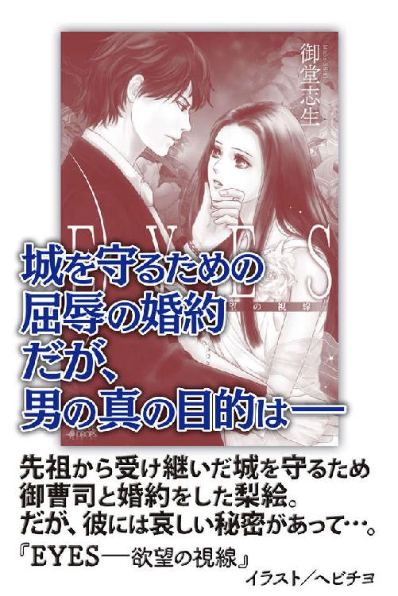

| 恋は待てない―いけないドクター (らぶドロップス) | |
| 御堂志生 | |
| 株式会社パブリッシングリンク (2017) | |

恋は待てない
―いけないドクター
御堂志生
プロローグ
それは新條綾が高校に入学して二ヶ月ほど経ったある日のできごと。
幼なじみの佐久間舟がいきなり彼女を呼びに来た。
「なあ、ちょっと......いいから、ちょっと来いよ！」
「何？ なんなのよ」
「いいからさ、珍しいもの見せてやるよ」
「珍しいもの？」
綾は裏庭を通り抜け、垣根の切れ目を越えてお隣の庭に入り込む。そこは舟の家だ。彼に導かれるまま勝手口から家の中に入り、廊下をゆっくりゆっくり歩いて行く。
「あっあっあぁん......やぁん、ダメェ、あぁっ！」
突然、耳に飛び込んで来たのは、切なげな女性の喘ぎ声。
舟は振り返り唇に人差し指を当て、そうっとリビングのドアを開けた。
ドキドキしながら綾がドアの隙間から見たものは......舟の次兄、海が女の子とエッチする姿だった。
綾は隣に住む佐久間家の五人兄弟と幼なじみだ。
一番長く一緒にいたのは末っ子で同級生の舟。舟とは同じ私立の幼稚園、初等部、中等部、高等部と通ってきた。
綾の両親はそれぞれ会社を経営している。そのせいで、ひとりっ子の綾は小さいころから佐久間家に預けられることが多かった。いわゆる、家族ぐるみの付き合いだ。一緒に旅行したり、クリスマスや誕生日のパーティをしたり。仲のよい理由は、父親同士もずっと隣に住む、同じ歳の幼なじみということも大きかった。
綾と違って、舟には兄がふたり、姉もふたりいる。同じ敷地内に祖父母まで同居する大家族だ。
佐久間家は代々医者の家系で、現在も総合病院を経営していた。舟の祖父はすでに引退しているが元内科医。父は外科医で現在の佐久間病院の病院長、母は看護師長である。
そして......綾の初恋の相手は、舟の十歳年上の長兄、志貴。
志貴は関西の国立大学医学部を二年前に卒業。現在は、東京近郊の大学病院に後期研修医として勤務する一方で、実家も手伝う駆け出しの小児科医だ。
ちなみに、長姉、環は北海道の医大に、次姉、葵は愛知の薬大に通っており、ふたりとも家を出ている。志貴も大学病院の寮住まいなので、現在、家にいるのは舟と高三の次兄、海のふたりだけだった。
二十六歳の志貴にとって十六歳の綾は恋の対象外。これまで全く相手にされたことなどない。そう......これまでは。
この夏、綾の恋は待ったなしに動き始めた。
第一章 初体験!?
「えっ！ 嘘......カ、カイちゃん？」
「しぃっ！ 声出すな」
舟は驚きの声を上げる綾を黙らせた。
誰もいないと安心しているのか、海はなんとリビングで大胆なことをしている。
相手の女の子は海の同級生らしい。深みのあるオリーブグリーンを基調にしたタータンチェックのプリーツスカート。それは綾たちも通っているＳ学院高等部の制服だ。
自分と同じスカートを腰の上まで捲られ、白いお尻が丸出しになっているのを見るのはどうにも恥ずかしい。綾自身のスカートを捲られている気がして、思わず裾を押さえてしまう。
綾は赤面しつつ、視線だけはリビングのふたりから外すことができなかった。
女の子はソファにうつ伏せになり、お尻を高く上げた格好だ。左足のふくらはぎ辺りにぶら下がっている白い物体はショーツだろう。上半身は制服のブラウスを着たまま、緑のリボンはほどけて床に落ちている。
海の手は彼女のお尻を鷲掴みにしていた。
そして......なんと、その間に顔を埋めていたのだ。
（きゃー何？ 何やってるの？ カイちゃん......ひょっとしてアソコを舐めてるのーーっ!?）
綾が息を殺して見ていると、女の子の喘ぎ声以外に小さな水音が聞こえた。しばらくすると、「やっ......やぁんんっ！」そんな声を上げつつ、彼女はソファに顔を押し付けている。
海はお尻から顔を上げた。口元をぬぐう仕草がどこかいやらしい。
次に海は制服のズボンのベルトを外した。ファスナーを下ろすと、青い下着が見え隠れする。海がその下着をずらした瞬間、ニョキッと海の股間に棒が生えた。
（うわっ、うわっ、うわっ......カイちゃんの、どうなってるのっ!?）
海のアソコは見たことがある。
といっても綾が幼稚園のころだから、もう十年以上前のこと。佐久間家の五人とは一緒にお風呂にも入っていた。当時はそれほど重要なアイテムとは思わなかったので、絶対にこんな形だったとは言いがたい。ただ、女の子とは違うモノが股間に付いていたのは覚えている。
（エッチするときって、ああなるんだ......）
綾は初めて見る性行為に目が釘付けになった。
しだいに喉がカラカラになり、ゴックンと唾を飲み込む。海の股間の棒......使用時の〝男性自身〟を初めて目にしたのはすごくショックだ。
「あっ、カイ、カイ......あぁん、もう、きてぇっ」
「ああ、後ろから入れていい？」
「あたし前のほうがいい～。あ、そうだ、今日はちゃんと付けてよ。でないと、アレがくるまですっごい不安なんだから」
「......わかってるって」
そんなやり取りが聞こえる。
（後ろ？ 前？ 何を付けるの？ 何が来るの？）
綾には話の半分もわからない。
すると、海はズボンのポケットから四、五センチ四方のパッケージを取り出した。それを口に咥え、ピッと破り股間の辺りでゴソゴソしている。
そのとき綾はピンときた。
アレは保健体育の授業で習った〝コンドーム〟に違いない、と。
「オッケー、付けたぜ。上向けよ」
海がそう言うと彼女はソファの上に仰向けで転がった。おまけに、脚を大きく左右に開く。まるで、赤ちゃんがオムツを替えてもらうときのような格好だ。とても人前でできる格好ではない。いや、人がいなくてもショーツを脱いで脚なんて開けない。
（エ、エッチって、自分からあんな格好しなきゃダメなんだ!?）
軽くパニックになる綾の目の前で、海と彼女の股間が重なった。その瞬間、彼女は背中をググッと反らし、大きな声を上げた。
「ああっ、イイッ！ 気持ちいい。海......きて、もっと深く」
何を〝深く〟なのか、想像するだけで綾の心臓はバクバクし始める。
ふたりの腰がくっついたまま上下、前後に激しく動く。ソファは壊れそうなくらいギシギシと揺れていた。
（あのソファ......もう二度と座れないと思う）
このリビングに入るたび、思い出すだろう。恥ずかしいのに、ドキドキなのに、綾は抱き合うふたりから一度も視線を外すことができなかった。
ふいに肩を叩かれ、綾はビクッとする。
「そろそろ終わりそうだ。バレたらヤバイ。行こうぜ」
舟の息が彼女の耳たぶにかかった。耳の奥がムズムズして変な感じがする。
「ん......」
来たときと同じく舟はリビングのドアをそうっと閉めた。綾はちょっとだけ残念に思いながら、リビングから離れたのだった。
勝手口近くまでくると、舟は綾に顔を寄せてきた。
「スッゲーだろ？」
瞳をキラキラさせてささやく。その興奮した表情にびっくりしながら、綾は自分も息が上がっていること気づいた。
「シュウは知ってたの？ 前から見てたんだ」
「葵姉が大学に入ってから海兄とふたりだろ。アイツ、しょっちゅう女を連れ込むようになってさ。隣の部屋のベッドで、あんあん、始められたら......こっちもヤバイじゃん」
「う、ん。すごいね......あんなの初めて見た」
綾はまだドキドキしている。それに、なんだか身体がジンジンして変な気分だ。
ふたりは二階に上がり、階段から一番遠い舟の部屋に入った。これまで何度も出入りしたことのある部屋。とくに何かが変わったわけでもないのに、なぜか壁際にある舟のベッドが気になって仕方がない。
綾の視線は無意識に宙を泳いでしまう。
そんな綾の気配に気づいたのかもしれない。舟がとんでもないことを言い出した。
「なぁ......俺たちもヤッてみない？」
「シュウ！ あたしたちまだ高一だよ」
「中坊でもヤッてる奴はいるだろ」
「でも、妊娠とか困るし」
「俺、持ってるぜ。海兄のコンドームをパクったんだ」
そう言うと、さっき海が使っていたパッケージを舟も手にしていた。
瞬時にエッチシーンが頭に浮かび、綾は耳まで熱くなる。
「シュウ......使ったことあるの？ エッチしたことある？」
「バ、バカ！ ないよ、そんなもん」
綾の質問に舟も真っ赤だ。
「だったら、ちゃんと使えるかどうかわかんないでしょ。あたしもないし......」
「大丈夫だって！」
「でもっ」
「俺、綾でなきゃ、こんなこと言わないぜ。ずっと好きだったんだ。兄貴のことなんか忘れて、俺と付き合ってくれよ」
それは綾が初めて見る、舟の真剣な顔だった。
つい先日、綾は十六年越しの初恋に終了のお知らせをもらった。
なんと、あの志貴が結婚すると言うのだ。男が二十六歳で結婚なんて、いくらなんでも早いんじゃ......と思っていたら、相手の女性が妊娠したとかしないとか。
大人になるまで待って、と言い続けてきたのに、これではもう綾に出番はなくなってしまった。さすがに、離婚に追い込もうとまでは考えていない。
（そりゃ、将来離婚してくれたらいいなぁ......くらいは思うけど。できれば、破談になってくれたらなぁ、とかも考えちゃうけど）
でも赤ちゃんが生まれたら、子供好きの志貴のことだ。そう簡単には別れないと思う。
どうせ諦めないといけないなら、これはいいきっかけかもしれない。
本音を言えば綾もセックスには興味がある。たった今、目にした海たちだって、メチャクチャ気持ちよさそうだった。
「気持ち......いいのかな？」
綾はポツリと言う。
「よさそうだったじゃん」
「最初は痛いっていうよね」
「なるべく、優しくする。そっとするから」
「でも」
「頼むよ、綾。な？」
「う......ん」
それでも諦め切れずに綾は志貴の顔を思い浮かべていた。
（初めての相手は、やっぱりシキちゃんがよかったなぁ）
くっきりしたふた重のまぶたに、人懐こい黒い瞳。黒髪でサラサラのショート、甘いルックスとは反比例して、脱いだらけっこうすごい。身長は一八〇センチもあって、高校大学とフリークライミングをやっていた。ボコボコした岩壁を、道具も使わずスルスルと登って行くあれだ。高校時代は大会で優勝したこともあったと思う。
都心に出るといつもモデルにスカウトされるくらいカッコいい。でも、志貴はそのたびに断って医者になった。それも国立大学の医学部にストレートで合格。なんの引っかかりもなく、国家試験も突破した。まさに文武両道ってヤツだ。
そんな志貴は、いつまで経っても綾を幼稚園児並みにしか扱ってくれなかった。
かたや、舟だって捨てたものではない。中等部ではサッカー部のエースだったし、高等部でも一年生ながらレギュラー入りしている。学校全体でも人気があるほうだと思う。
志貴と比べたら全然もの足りないが、全く知らない人と初体験するよりはマシかもしれない。それに、経験すれば綾も大人の仲間入りができる。将来、万にひとつ、志貴が独身に戻っていたとき、彼好みの〝大人の女〟になっていたい。
そんな思いにあと押しされ、
「ちょっとだけ......試してみてもいいかな......」
つい、そんな言葉を口にしていた。
舟の顔がパッと明るくなる。
「で、でも、イヤって言ったら、途中でもやめてくれるよね？」
何度もうなずく舟を信じてしまう綾だった。
☆ ☆
「はぁぁぁ～」
舟と初エッチをした日から三週間が過ぎた。
ここ数日、綾のため息は増えるばかりだ。期末テスト前だというのに全然勉強は進まない。綾も舟も赤点を取るほどひどい成績ではないし、テストを受けさえすれば普通に進級できるはずだった。
そう、何も問題を起こさなければ......。
舟はあれから一度も会いに来ない。でも、綾も会いに行っていないのだからお互い様だろう。
つくづく、興味本位の初体験なんてするものじゃない。思い出すだけで恥ずかしいし、なんだか悔しい。兄妹同然に仲のよかった舟と、どうにも顔が合わせづらくなってしまった。他にも、両親の顔が真っ直ぐに見られないし、佐久間家にも行くに行けない。
何より、ずっと好きだった志貴の顔すら直視する自信がなくなってしまった。
なぜなら......。
「はあぁぁぁぁ～」
穴が開くほどカレンダーをみつめてはため息をつく。
何度数えても二週間も遅れている。先月まで二十八日から三十日周期でちゃんと来ていた生理が今月はこない。
もし、妊娠していたらどうなるのだろう？
どんな女性も妊娠すれば母性本能に目覚める、と聞く。でも今のところ、綾にその気配はない。ただ、不安なだけだった。
これが志貴の子供であったら......綾は迷わず、産みたい、と思っただろう。でも、志貴の子供を産むのは綾ではない。バカなことをした。本当に、バカなことをしてしまった。反省しても、もう遅い。本当に授かっていたときは、命の取り消しはできないのだから。
舟に話さないといけない。
佐久間病院は総合病院だ。幸か不幸か、産婦人科もある。
「はあぁぁぁぁぁぁ～」
綾は大きなため息をつきつつ、舟の携帯に電話をかけたのだった。
二日後、舟から連絡がくる。するといきなり、とんでもないセリフを口にしたのだ。
『兄貴に話したから。おまえのこと診察してくれるって』
そんな舟の言葉に、不安のあまり張り詰めた心の糸がプツンと切れた。綾は半ばパニックになり、抑えようのない怒りを舟にぶつける。
「シキちゃんに話したですって！ バカ！ シュウの大バカッ！」
『だってしょうがないじゃん。他に助けてくれる人なんかいないしさ』
「なんで......よりにもよってシキちゃんに話すのよ！」
舟とエッチしたなんて、しかも妊娠したかもしれないなんて、志貴にだけは知られたくなかった。
そう思ったとき、綾は志貴のことを全然諦められていないことに気がついてしまう。
志貴が大学に入学して実家を離れたのは、綾が八歳のときだった。それまでは、最低でも一日一度は志貴の顔を見ることができた。毎日、チラッとでも志貴の存在を確認することが、綾の生き甲斐だった。
そのことを大人に言えば『小二で生き甲斐って』と笑われたが......たかが八歳、されど八歳である。志貴が隣の家からいなくなったことは、綾にとってこの世の終わりのように感じた。
志貴が大学を卒業するまでの六年間、帰ってくるのをひたすら待ち続けた。年に数回しか会えなくても、綾の王子様は彼以外にはあり得ない。
とはいえ、志貴に対する熱烈な思いも何度か挫けそうになったことはある。
一番ショックだったのは三年前、大学卒業間近に志貴が帰省したときのこと。なんと交際中の彼女を実家まで連れてきたのだ。
わざわざ実家に連れてきたことも衝撃だったが、最悪なことにふたりのキスシーンまで見てしまう。
当時の綾は中学一年生。キスはもちろんセックスの意味も、少女向けのマンガで見る程度に理解していた。大好きな志貴が、高校時代からガールフレンドを家に連れ込み、エッチなことをしていた、という話を母親同士の会話から耳にしたこともある。
でも、聞くと見るとは大違い。
それでも綾はめげなかった。
高校に上がると恋愛に関する情報も増えてくる。そんな中で綾が勇気づけられたのは、『大人の男性は若い女性が好き！』というもの。
それは綾にとってこのうえなく有利な情報だ。今現在、志貴の周りにいる女性の中で綾は誰より若いはず。医者はひとり立ちが遅いから、結婚も遅いのが常だ。志貴が三十歳まで独身なら、綾は二十歳。充分にチャンスはある。
しかし、うっかりしていた。
綾が母親の本棚からこっそり借りているロマンス小説には、恋敵の女が男を奪い取る手段がいろいろと書かれてあった。そのひとつが──妊娠。
まさか、志貴がそんな罠に嵌まるなんて、と思う。でも、弟の舟が言うのだから間違いないのだろう。
『──綾ちゃんのことも俺が守ってやるよ』
一歳の誕生日に綾の手を取り、十一歳になったばかりの志貴が言ってくれたセリフ。綾にとって一番古い記憶だ。
（パパは断固否定してるけど......間違いないんだからっ）
哺乳瓶片手に、ベビーチェアから志貴を見上げたあのとき、綾が運命の恋に出会った瞬間だった。
綾がこの話をするたび、クラスメートから部活の先輩後輩まで、『あり得ない！』『思い込み激し過ぎ』と笑われ続けてきた。志貴にとっても、妹がひとり増えた、という程度だったのかもしれない。
その志貴に舟とのエッチを知られてしまった。綾にとっては赤い糸をスパッと切られてしまった気がする。
（最初から赤い糸なんて繋がってない、ってことは......そ、そんなことないもん！ まだちょっとくらい繋がってたかもしれないし）
怒って黙り込んだ綾を、舟は突き放すように言う。
『嫌ならいいけど......俺にはどうしようもないからな。もう、カンベンしてくれよ。俺、わかんないよ』
『シュウって最低！ 妊娠したら困るって言ったのに......やめてって何度も言ったのに、最後までして。ちゃんと付けたって嘘までついて......ホントにこうなったら、わかんないなんて』
『あ、綾......あの』
『シュウがこんな卑怯者だなんて知らなかった。シュウなんかとエッチするんじゃなかった！ こんな初体験なんて最悪だよ。シキちゃんにも知られちゃったし。あたしだって、もうわかんない！』
電話越しに怒鳴ったあと、綾は涙が止まらなくなった。
舟が電話の向こうでおろおろしているのがわかる。
『ご、ごめん。悪かったよ......ホントに反省してる。兄貴にも言われた、言い訳するなって。俺が全部悪いんだ。もし、妊娠してて綾が子供を産むなら、俺、ちゃんと責任取るから。今すぐは無理だけど、十八になったらちゃんと結婚する。ごめんな、ホント、ごめん』
綾が泣きやむまで、舟は『ごめん』と謝り続けたのだった。
☆ ☆
佐久間志貴は大学を出て三年目の二十六歳。
この春からようやく小児科医を名乗れる身分になった。現在も、大学病院に勤めるかたわら、小児科医不足の佐久間総合病院でヘルプもしている。他にも頼まれて、夜勤のアルバイトをすることもあった。
末弟の舟にすれば〝好き放題やっている長男〟に見えるのかもしれない。だが志貴にすれば、親のプレッシャーも少なく、自由な末弟が羨ましいと感じていた。
医者になることは納得の上だ。当然、病院を継ぐことも。だからせめて大学くらいは親元から離れたかった。そのため、実家から遠い関西の大学を選んだのだ。
大学に入ってすぐのころは最低限の勉強しかせず、合コンや夜遊びに精を出していた時期もある。だが、志を持って小児科医を目指してからは、おとなしいものだった。
そんな志貴のもとに、末っ子の舟が訪ねて来た。
志貴は佐久間病院を手伝う関係上、週末は実家に戻る。そのときには顔を合わせるのだが、十歳も離れた男兄弟なんて共通の話題はほとんどない。歳の近い海とは、あちこち遊びに行っているようだ。
そんな歳の離れた長兄に、しかもわざわざ大学病院の独身寮まで来たということは、よっぽど切羽詰まったことなのだろう。
思えば昔から、弟妹プラス一名が自分では手に負えないことが起きるたびに、彼を頼ってきたものだ。面倒ではあるが、志貴にすれば頼られたら悪い気はしない。
仕事で忙しい両親の代わり、というより、親には怒られそうなことでも志貴なら怒らないから、が一番の理由だろう。ノリは軽いが口は堅いので、下からの信頼は厚かった。
（まあ、高一なら悩みは勉強か部活か......サッカーバカの舟に限って、恋の悩みってことはないだろうし）
気楽に話を聞こうとした志貴の耳に飛び込んできたのは、とんでもない内容だった。
「こっ、子供ができたぁ！ 誰の？」
「だ、だから、俺の......」
「誰に？」
「だから......綾にって言ってんじゃん」
舟の言葉は志貴にとって、天地がひっくり返るほどの衝撃だった。
綾は佐久間家の兄弟姉妹全員にとって幼なじみだ。だが、志貴はいつの間にか〝綾は自分のモノ〟といった思いを抱くようになっていた。
顔を見るたびに綾は、『シキちゃんのお嫁さんになる！』と言う。先月実家に戻ったときも、志貴のもとにやって来て同じような言葉を口にしていた。それがなぜ、舟の子供を妊娠、なんて事態になるのか。
「お、おまえら、高校生の分際でセックスなんかしてたのか!?」
志貴は寮の部屋だということも忘れ、舟に怒鳴った。
「兄貴なんか中学で経験したって言ってたじゃんか！」
「俺の相手は女子大生のお姉様だ。手取り、足取り、腰取り教えてもらったんだよ！ んな、ガキ同士でやるから失敗するんだ！ このバカ野郎が!!」
ゼエゼエと肩で息をする。
商売柄、普段はもっと冷静な応対ができる。だが今回ばかりは、内容が内容だけに、とても冷静ではいられなかった。
「と、とにかくさ、もう二週間以上遅れてるって泣くんだ。頼むよ兄貴、診てやってくれよ」
「俺は小児科だぞ、生まれてから来るんだな」
「そんな冷たいこと言うなよ。俺だったらいいよ、でも、綾が......」
「いつからだ？」
「え？」
「いつからそんな関係なんだ！」
「今月から──」
志貴がいない間に舟に告白され、付き合い始めたということだろうか。
ついつい、聞かなくていいことまで聞いてしまう。
「何回ヤッたんだよ」
「いっ、一回だよ。──ふたりとも初めてで」
「初めてって......おまえなぁ」
ことの重大さがわかっているのか、と思うと、志貴のほうが頭を抱えたくなる。
「おまえらが付き合ってるって、両方の親は知ってるのか？」
「......付き合ってない、よ」
「はぁ？」
「綾のことは好きだよ、好きだけど、こんなことになるとは思わなかったんだ」
「だったら、なんでそんな真似したんだっ!!」
付き合ってもいないのにエッチだけした、という告白に、志貴はブチ切れた。いったい、親はどういう教育をしているんだ。
いや、自分の股間に手を当てて考えろ、と言われたら......志貴に、舟を怒る資格がないのはわかっている。
一方、予想外の兄の剣幕にビビッたのか、舟は半泣きだ。
「海兄が......彼女連れ込んでエッチしてたんだ。俺......綾とソレを見てて。なんか、綾も嫌じゃなさそうだったし......俺も止まんなくなって」
うつむいてボソボソ言う弟に、志貴はズバリ言い切った。
「わかってて見せたんだろ？ 綾がその気になってくれりゃラッキー、ぐらい思ってたんじゃねぇのか？」
「う......」
どうやら図星を指されたらしく、舟は声も出ない。
「ったく......なんでゴムくらい付けないんだ」
「付けたんだ。けど、綾が痛いってメチャクチャ暴れて......途中で外れたっていうか」
「言い訳すんな！」
志貴は弟の責任転嫁をピシャリと叱る。
「コンドームは九割以上の避妊率があるんだ。途中で外れるのは、付け方がまずかったに決まってる。綾のせいにするんじゃねぇ！」
「ごめん。なんか、ちゃんとはまらないな、って思ってた。でも、綾に『大丈夫？』って聞かれて......黙ったまま、つい。俺のせいなんだ、ホントにごめん」
「俺に謝られても、どうしようもないだろうが」
舟は目に涙を浮かべて殊勝に頭を下げる。
さすがに可哀想になり、志貴もそれ以上きつく叱ることができなくなった。
「どうすんだよ、子供ができてたら。綾はなんて言ってんだ」
志貴は立ち上がり、ひと息入れようと冷蔵庫からお茶のペットボトルを取り出し、コップに注ぐ。
缶ビールを開けたいところだが、とりあえず我慢だ。
「綾は怖いって、どうしたらいいかわかんないって言ってる。親に知られるのが怖いって」
「おまえは？」
「メチャクチャ怖い。やっぱ堕ろすしかないよな？ 俺たちまだ十六だし。子供なんて言われても......」
そりゃそうだろう。
二十六歳の志貴でも同じだ。妊娠を告白されたら腰が引けるに決まっている。男はいくつになってもそんなものだ。ましてや十六歳の高校生なら......気持ちはわかる。
だが──。
「手術の費用だが、二十万はかかるぜ。それにちゃんとした病院で受けるなら、保護者の承諾書が必要だ。後遺症とか、下手したら万一のときもあるからな。同意書にサインもいるし、どのみち親にはバレるな」
「そ、そんな......兄貴、なんとかなんないの？」
「ならねぇよ。金ならどうにかできるけどな。綾に万一のことがあったら、誰が責任取るんだ？」
「ま、万一って......まさか、死んだりしないよな」
「中絶手術のとき、出血が止まらなくなってショック死したケースもあるよ。そこまでいかなくても、子宮から無理に胎児を掻き出すわけだから......二度と子供が産めなくなるケースは少なくない。十六じゃ、身体の負担が心配だな」
コップを持つ舟の手がプルプルと震え始めた。
志貴の説明に、舟は血の気を失い真っ青だ。唇は震えて、目は宙を泳いでいる。
少し可哀想な気はした。だが、妊娠が事実なら、この先の修羅場はこんなものでは済まないだろう。
綾の両親、とくに父親の怒りを考えると、恐ろしい。
「舟──もし、綾が産みたいって言ったら、おまえはどうするんだ？」
「え？ まさか......」
「女ってのは妊娠した途端に母性本能に目覚めるからな。そうなったら、腹くくって十六歳でパパになるんだな」
「えぇっ！」
舟は目を見開いている。
自分のやったこととはいえ、まさか、妊娠なんて現実になるとは思ってもいない。それが十代のセックスの実情だ。自分にも身に覚えのあることなので、聞いた以上、知らん顔もできない。
志貴はとりあえず自分が診てやるから──そう言って舟の肩を叩いた。
高校生同士が興味本位で経験するケースは少なくない。わかってはいても、まさか綾が......というショックから志貴は抜け出せなかった。
綾はまだまだ子供だったはずだ。綾だけは、最近の浮ついた高校生とは違うと信じていたのに。そんな思いがグルグルと頭の中を回っている。
弟に隠れて、何度目かのため息をつく志貴だった。
第二章 診察室の秘密
六月最後の日曜日──梅雨の最中なのに、悔しいくらいの晴天だった。
「去年新館が建ったろ？ こっちの旧館から比較的新しい医療器具は新館に移し、古いヤツはそのままになってる。壊すか、リフォームするか、まだ決まってなくてな。俺が勉強に使っていいってことで、鍵を預かってるんだ」
そう言って志貴は、綾を旧館の産婦人科診察室に案内した。
「シキちゃん......怒ってる？」
「なんで？」
綾は怖々と診察室に足を踏み入れつつ、志貴に尋ねた。しかし、質問に質問で返されてしまう。
どうやら、志貴はかなり本気で怒っているらしい。
「なんでって。こんなことになって......高校生のくせにって」
綾は言われたとおりフレアスカートを穿いてきていた。手にしたトートバッグの持ち手をギュッと握り締め、うつむき加減で志貴を見上げる。
「俺も初体験は中学んときだったし、人に説教できるほど品行方正じゃねぇしな」
「でも、怒ってる」
「四月に誕生日プレゼントをやったときは、『二十歳になるまで待ってて』とか言いやがったくせに。ずいぶん、切り替えが早いじゃねぇか」
綾から見えるのは、志貴の憮然とした横顔だった。
彼は淡々と、一年近く放置していた機材がちゃんと動くかどうかをチェックしている。
「先月戻ったときだって、『シキちゃんのお嫁さんになるために理数系も頑張る』とか、言ってたんじゃなかったか？ ......ま、いいけどな。別に、マジで待ってたわけじゃねぇし」
「そうだよ。あたしのことなんか、どうだっていいくせに」
「なんだよ、それ」
「シキちゃんのせいだからねっ！ 全部シキちゃんのせいなんだから」
本当に志貴のせいだなんて思ってはいない。でも、呆れたような、突き放すような口調が悲しかった。八つ当たりだとわかっていても、喚かずにいられない。
自分のバカさ加減に涙が込み上げてきて、綾は唇を噛んだ。
志貴はそんな彼女に向き直り、
「俺のせいにすんのはいいけどな。舟とセックスしたのはおまえだろうが！ ちっとは反省しろっ！」
ため息と一緒に吐き捨てるように言う。
志貴の言うとおりだ。
勝手に好きになって、勝手に失恋して、志貴を忘れるために『シュウも嫌いじゃないし、まあいいか』くらいでエッチした綾が悪い。
そんな綾のために、志貴はわざわざ休みを潰して、旧館の診察室を開けてくれたのだ。勉強のためではなく、診療目的で旧館の機械を無断で使うなんて、バレたらヤバイことになるのではないか。
（やっぱり、シキちゃんって優しい）
心の中で感謝しつつ、でも綾が口にしたのは違うことだった。
「もし、赤ちゃんできてたら......シキちゃんと同じだね。でも、あたしは産めないから、同じじゃないか」
「はぁ？ 俺とって、なんだそりゃ」
「とぼけないでよ！ シュウに聞いたんだからね」
「何を？」
「いつも、コロコロ彼女を替えるくせに。あの人とは一年も付き合ってたんだね。でも、赤ちゃんなんてひどいよ！ もう、あたしの出番なんかないじゃない。どれだけ急いでも、歳は追いつけないんだもの。シキちゃんは待っててくれなかったから、シュウのこと、好きになれるかもって思ったからっ！」
綾は堪え切れず、わあっと泣いてしゃがみ込んだ。
一方、綾の言葉の半分以上が意味不明で、志貴は唖然としていた。
「落ちつけ。いいか、落ちつくんだ、綾。──で、あの人って誰だ？」
「六月の初めに......シキちゃんに、会いに来た人。あの人と、去年......付き合ってたでしょ」
綾は座り込んだまま、しゃくり上げながら答える。
そんな綾の答えに志貴は思わず感心していた。
「よく覚えてんな。そんなこと」
「おばさんが言ってたよ。シキは腰がフラフラしてるから、早く結婚して欲しいって。よかったね、結婚決まって」
その瞬間──ガッシャーン！ と派手な音が旧館内に広がった。
志貴は手にしたトレイを落としてしまい、慌てて廊下に顔を出し、人の気配がないことを確認する。
「あ、綾......なんだよ、それ」
「だって、あの人に赤ちゃんができたんでしょ？ 結婚するのが男の責任でしょ？ でも、ゼッタイ嵌められたんだよ、シキちゃん」
「嵌められた？ 誰に？」
「あの女に決まってるでしょ！」
涙に潤んだ瞳にはくっきりと嫉妬の色が浮かんでいた。口調も、〝あの人〟から〝あの女〟に変わっている。十六歳とはいえ、恋する女は恐ろしい。
だが、なんとなく、志貴にも状況が飲み込めてきた。
「なぁ、綾。その話は誰から聞いた？」
「シュウ」
（あのヤロー！）
志貴は心の中で毒づいた。
いくら綾を振り向かせる手段とはいえ、卑怯にもほどがある。
たしかに、何かを約束している仲じゃない。だが、志貴にとって綾は〝トクベツ〟だった。妹であり、お姫様であり、宝物であり──。
セックスの対象として考えてきたか、と聞かれたら『ノー』だ。
そう、かの光源氏も若紫を引き取ったときは『何歳になったら押し倒そう』なんて、考えていなかったと思う。......たぶん。
そう遠くない将来、美人になるだろうなと仄かに期待しつつ、『シキちゃん好き！』と言われるたび、『俺が守ってやらなきゃ』『コイツは俺のモノだから』なんて気持ちになっていた。綾が十八歳になっても変わらなければ、本当に『俺のモノ』にしてもいいか、と思っていたくらいだ。
志貴にとって綾はケースに入った雛人形のような存在。素手で触れられないほど大切な〝珠玉の宝〟だった。
黙り込んだまま、静かに怒る志貴に、綾は不安な表情を浮かべる。
「あの......シキちゃん。ごめんね。やっぱ、シキちゃんのせいじゃない。あたしが悪いんだよね。バージンじゃなくなったら、大人になれる気がしたの。そうしたら、少しでもシキちゃんに追いつける気がして」
膝を抱えたまま、綾はまるで立ち上がる気配がない。そんな彼女の隣に膝をつき、小さな肩に手を置いた。
志貴は表情を和らげ、うなだれる綾にできるだけ優しい声で話しかける。
「セックスしたって、大人にはなれねぇよ」
「うん、そうだね」
「どっちにしても、子供はまずいよな」
「あたしもシュウも初めてだったから......それに、カイちゃんのこと、聞いた？」
「ああ。アイツも兄弟ふたりきりだと思って、家に連れ込んで無茶するよな。やりたい盛りの弟がいるのに慎めってぇの」
志貴の言葉を聞くなり、綾はパッと顔を上げて口を尖らせた。
「シキちゃんもしてたくせに」
「俺が？ いつ？」
「三年前。京都から連れてきた女の人と車の中でキスしてた」
「げ......見てたのか？」
ヤバイと思って口元を押さえる。
綾は屈託のない表情で「うん」と言って大きくうなずいた。
「その先も？」
「先って？」
思わず墓穴を掘りそうになり、志貴は慌てて話をストップさせる。
「あ、いや......いい。そうか、見られてたのか。舟も見てたのか？」
「ううん。あたしだけ。なんかショックだったなぁ」
少し落ちついてきた綾に背中を向けながら、志貴はあのあと、シートを倒してカーセックスになだれ込んだのを思い出していた。
同じ大学の後輩で学部は違った。彼女の実家も都内だったように思う。同じ時期に帰省すると言うんで、一緒に帰ってきただけだ。
大学時代の志貴は医学部の看板をいいことに、適当に女を引っかけて遊んでばかりいた。相手はもちろん、彼女ひとりじゃない。思い出せば出すほど、弟たちにも綾にも説教がしづらくなる。
志貴は咳払いをひとつして気分を切り替えた。
「ともかく、ハッキリさせようぜ。いいな、綾」
綾はコクリとうなずく。
「どんなことするの？」
不安そうな顔でこちらを見上げている。
その顔を見ていると、志貴は返事に詰まった。また泣かれると厄介だ。とはいえ、綺麗ごとを言ってごまかしている場合でもない。こういうときは、できるだけなんでもないことのように言うのが一番だ。
志貴は思い切って口を開いた。
「ま、とりあえず、隣のトイレが使えるから、小便取って来いよ。コップは小窓に置いてあるはずだ。まず尿検査で確認してから、内診にしよう」
「ショウベ......そ、それってオシッコのことだよね。シキちゃんに見せなきゃなんないの？ そんなのヤダーーッ」
「やかましい！ 騒ぐんじゃねぇ。とっとと行って来いっ」
お腹に赤ちゃんがいるかどうか、機械をお腹に上から当てて検査するものだとばかり思っていた。モニター画面に赤ちゃんの画像が出て、といった場面をテレビやマンガで見た気がする。
でも志貴が口にしたのは『まず尿検査』という言葉。ということは、もっといろいろな検査があるに違いない。
佐久間病院の産婦人科は全員女性のドクターだ。
看護師も当たり前のように女性ばかりだった。本当なら、そういった事前の検査は看護師がやるという。でも今ここに、看護師はいない。
事前の検査も何もかも、志貴がひとりでやることになり......。
ふいに、志貴が言った『内診』の内容が気にかかった。
「シキちゃん......内診って何？」
「ちゃんとスカートを穿いてきてるな。じゃ、検尿が終わったら下着だけ脱いで、検診台に座って両脚を左右の台にのせておいてくれ」
志貴が示した場所とは、マッサージチェアのような大きなイスだった。
お尻を置くところにタオルが敷いてある。そして、肘掛けの延長線ぐらいの位置に台があった。両脚を左右の台にのせたら......膝を曲げて、股を開くことになる。
「そんなとこに脚をのせたら、シキちゃんに丸見えじゃない！」
「当たり前だ。見せてくれなきゃ、内診はできないだろ」
「イヤだよ、そんな」
「舟には見せたんだろ？」
ズキンと胸が痛んだ。
志貴の視線が冷たくて、綾の胸は痛みが治まらなかった。
「あのときは、暗かったし......シュウには、見られてないと......思う」
綾がしどろもどろになって言い訳しようとしたとき、志貴はパチンとモニターのスイッチを切った。
「そんなに嫌なら無理強いはしない。早めに新館の産婦人科に行くんだな。あっちは医者も看護師も女だけだ。──俺は帰るぞ」
綾の目に、さっきとは違う涙が浮かび上がってきた。
嫉妬なんてしている場合じゃない。赤ちゃんができていたら、本当に自分と舟はどうなってしまうのだろう。そんな、不安の涙だった。
「──シキちゃんとは初体験できないってわかったから。だったら、全然知らない人にあげるより、シュウのほうがいいって思ったの。シュウのことは嫌いじゃなかったし......ちゃんと避妊するって言ってくれたから」
志貴はため息をつくと、綾の髪を撫でた。
「もういいよ。綾」
「でも、メチャクチャ痛いだけだった。シュウが言ってた......あたしが暴れたせいだって。やっぱりそうなのかな？ あたしのせいで、こんなことになったのかな」
「それは違う。奴にも言ったけど、暴れたくらいで簡単に取れるもんじゃないんだ。付け方がまずかったんだよ。使い方を間違った舟の責任は大きい。でも綾、おまえにも責任はあるぞ。嫌いじゃなかった、くらいの男に脚を開くな。子供ができてもいいくらい、惚れた男にしとけ」
「......うん」
志貴の手は大きくて優しかった。
（子供ができてもいいくらい惚れた男なんて......シキちゃんしかいないのに）
そう思うと、さすがの綾もなかなか涙を止めることができない。
志貴はそんな綾が落ちつくまで、髪を撫でながら、ずっと待っていてくれたのだった。
だが、いつまでもグズグズ泣いているわけにはいかない。切り替えの早さと思い切りのよさが綾の長所だ。
綾は志貴に言われるままトイレに行き、検査用のコップを持って戻ってくる。
そのあと、志貴はいくつか綾に質問をして、答えを紙に書き込んでいた。そのまま検査用のコップを手に持ち、「じゃ、脱いで座ってろ」と軽い調子で言い、スクリーンの向こう側に消える。
白いスクリーンの向こうで何が行われているのか......すっごく気になった。
でも今は、それどころではない。綾は覚悟を決めるとスカートの中に手を入れ、一気にショーツを引き下ろした。
「今から、このプローブ（超音波検査用探触子）を入れて超音波で子宮の中を見るから......ちょっと痛いかもしれないけど、我慢しろよ」
気合いを入れてショーツを脱いだものの、とりあえず、綾は脚を下ろしたままイスに座っていた。
そんな彼女にちょっとスクリーンをずらし、志貴は手にした棒を見せる。綾はびっくりして目を見開き、マジマジとみつめた。
「シキちゃん......その棒に付いてるのって......コン、コン」
「業務用のコンドームだ。取れたりしないから心配すんな」
そういう問題ではないと思う。
「ム、ムリ......入んないよ、そんなの」
「舟のアレが入ったんなら大丈夫だよ。アイツのより細いだろう？」
（そ、そうなんだ......舟のアレって、もっと太かったんだ）
志貴の言葉に綾はショックを受けていた。
あのときは途中で怖くなって、綾は必死に『もうやめるっ！』と叫ぶだけだった。チラッとは目にしたかもしれないけど、ほとんど覚えていない。
「そんなの知らないっ！ だって、シュウのなんて......ちゃんと見てないし、触ってないもん。でも、きっとムリだよ。だって、途中までしか入らなかったんだから！」
「途中って、何が途中？」
「だから......シュウのアレ。ものすごく痛くて、どんどん上にずり上がっちゃって......どれくらい入ったかわかんないけど。あ、シュウは先っぽしか入ってないって言ってた気がする」
綾の頭がベッドのヘッドにゴンと当たった直後、舟は短い声を上げて押し込むのをやめてくれた。そのあとは気まずい沈黙が広がって、舟は無言のまま綾から離れていった。
ホッとした瞬間、今度は舟のほうが素っ頓狂な声を上げ、
『コンドームが外れてる』
なんて言い出したのである。
（あーもう、なんであんな勢いで初体験なんてしちゃったんだろう。ホント、あたしって救いようがないくらいバカ）
一生の思い出に残るようなロマンテックな初体験を夢見ていたのに、かけ離れ過ぎている。
でも、もし相手が志貴だったら......たとえどれほど悲惨な初体験だったとしても、素敵な思い出になっていたに違いない。
複雑な心境で志貴を見上げると、なんとも言えない表情で眉間に縦ジワを刻んでいた。
綾の返事がまずかったのかもしれない。
「あ、の......シキちゃん？」
「とにかく、命令だ！ 文句を言わずに脚をのっけろ」
綾は仕方なく、片脚ずつ台の上にのせた。
でも、どうしても膝を曲げることができない。上体を起こして太ももを閉じ、お尻を後ろに引いたままでいると、志貴に腰を掴まれてきっちりと座らされた。
「あ......ヤダ」
ズズッと腰がずり落ち、綾の恥ずかしい部分はあっという間に志貴の目に晒されてしまうのだった。
志貴は検診台の上にあるカーテンを引くと、綾の視線を遮断した。
そして、コンドーム付きのプローブを綾の中に入れ始める。
「い、痛っ！」
すぐにカーテンの向こうから悲鳴が上がった。どうやら綾の中はかなり狭そうだ。
「綾。もう少し力を抜けよ」
「そんなのわかんない......どうしたらいいの？」
「どうって」
志貴は『途中まで』という言葉が引っかかり、強引に押し込むのを躊躇った。でもこの位置では、とても子宮の様子は見えない。
実を言えば、試験紙での尿判定は陰性だった。
病院の試験紙は市販の妊娠検査薬に比べて格段に精度が高い。生理予定日の前でも、多少色は薄くなるが反応するくらいだ。生理が二週間以上遅れているのになんの反応もせず、しかもセックスはその一度だけなら、まず妊娠はしていない。
（これだけでいいか......でもなぁ）
スクリーンの脇からチラッと綾を覗き見る。
綾にしては珍しく、悲壮感に満ちた顔だ。恥ずかしそうに下着を脱ぐ姿からは、十代乙女の初々しさが漂ってきた。なかなか目にできるものではないだろう。
（シュウのバカ野郎にはあとで説教するとして。俺に確認もせず、シュウに走った綾にも、きちんと反省してもらわないとな）
志貴の中に、小さなイタズラ心が浮かんでくる。
（いやいや、違うって。ちゃんと診察しておくほうが安心だし......）
そんな言い訳をしながら、彼は内診に踏み切ってしまう。
これがそもそもの間違い──いや、すべての始まりだった。
志貴の場合、産婦人科は臨床医の研修中に回ったくらいで専門ではない。
だが、女性のその場所は、全くの不案内というわけでもなかった。別の目的で何度も下着を脱がし、指や指以外のモノを押し込んだ経験がタップリある。
志貴はいったんプローブを引き抜くと、内診用の手袋をはめ、自分の指を入れてみた。
処女膜といっても膜が張っているわけではない。仮に、完全に塞がっていたりしたら、生理のときに大変なことになるだろう。
女性の膣は子宮を守るようにヒダが重なって膜のようになっている。その部分に強い力が加わったとき、裂けて出血するのだ。全く出血しないこともあれば、出血や痛みが続く女性もいる。一度経験した女性でも、何年もしなければ元のように戻るという。
綾の中は、志貴の知らない狭さだった。
「シ、シキちゃん。何してるの？ 機械......入った？」
「いや、無理に押し込めないだろ。ちょっと待てよ。指で確認してからだ」
「ゆ、ゆびぃ？ シキちゃんの指なんて、エッチ！」
百パーセントエッチなことは考えていない、とも言い切れず......。
「バカ言ってんじゃねぇ！ これは診察だ、診察！」
志貴は動揺を隠しながら怒鳴り返す。
綾の経験はたった一度というから狭いのもうなずける。とはいえ、こんな窮屈な場所に無理やり押し込んだら、相当な出血があったんじゃないだろうか？
指を入れたまま、志貴は少し考え込む。
「なぁ綾、初体験のとき、どれくらい出血した？」
「出血って......血？ ううん、血は出てなかったよ」
「はあ？ そんなわけないだろ。こんなに狭いんだから」
無意識で、志貴は指をクルッと回す。
「あたし......狭いの？ あっ......はぁぅ」
そのとき、彼の思考を狂わせる声が耳に届いた。
内診の目的で押し込んだ指先に潤いを感じ、志貴の心臓はドクンと音を立てた。薄いとはいっても手袋越しではよくわからない。いっそ外してしまおうか。
そんな思いが脳裏をよぎる。
（おいおい違うだろ......余計なことを考えるんじゃねぇぞ、俺）
冷たい汗が志貴の背中を伝い、これまで経験したことのない感覚にゾクッとした。
なるべく見ないようにしていた綾の下腹部に、志貴はそっと視線を向ける。綾の身体は〝コドモ〟でなく、すでに成熟した〝オンナ〟に近かった。もちろん完熟にはほど遠く、ヘアは薄めで花びらも綺麗なピンク色だ。指の一本でも窮屈なほどに狭く、ちょっと動かしただけで潤うなら、感度もなかなかの......。
そこまで考え、志貴は慌てて首を振る。
指を入れている目的が、どんどん横道に逸れてしまっている。
（ヤバイ......これはマジでヤバイ）
心の隅で惜しいと思いつつ、彼は内診を中止にしようと指を抜きかけた。
その瞬間、綾が太ももを擦り合わせるように閉じたのだ。
「ごめん......シキちゃん、なんか......変」
カーテンの向こうから熱を孕んだ声が聞こえ、志貴の指にも微妙な圧力が加わる。
小刻みに震えた太ももが、志貴の理性を一瞬で打ち砕いた。
カーテンの向こうで、必死に脱線を踏み止まろうとしている志貴の気持ちなど、綾にわかるはずもない。
彼女自身、大パニックだった。
冷たい塊を押し込まれたとき、舟にされたことを思い出して全身が強張った。思ったとおりかなり痛くて、でもベッドと違い、上に逃げることもできない。
綾が泣きそうになったとき、フッと下半身が自由になったのだ。
違和感を覚えたのはその直後のこと。正体が志貴の指だと知り、綾は信じられない感覚に襲われる。変な声が出たのはそのすぐあとだった。
綾は恥ずかしくて自分の口を押さえた。
志貴の指は一瞬止まったが、またすぐに綾の中で動き始める。
「あっ！ あの......何？ 何してるの？」
「大丈夫......診察しやすくするだけだ」
産婦人科の診察なんて受けたことはない。
でも、志貴の指の感触はすごく優しい。それも無理に奥まで入り込む感じではなく、入り口辺りで彷徨っている。
身体の奥がジワジワと温かくて......まるで、エアコンのスイッチが入ったみたいだった。
（産婦人科の診察ってこういうことするの？ なんか、気持ちいいんだけど。こんな診察ってあり？）
綾はドキドキしながら身体をよじった。
左右の太ももに温かいものが触れ、グッと押さえられる。たぶん志貴の手の平だろう。その直後、綾の大事な場所は、生温かい奇妙な感触に包まれた。
「ひゃっ！ やぁん......シキちゃん、指？ 指なのぉ？」
左右を押さえている手が志貴のものなら、綾の大事な場所に触れているモノは何？ カーテンの向こう側で、いったい何が起こっているの？
綾の頭に疑問符の嵐が吹き荒れる。
「やぁっん。何して......あっん、シキちゃん......この診察って......ゃあぁんっ！」
懸命に尋ねる綾に、志貴は全く答えてくれない。
綾は不思議な感覚が治まらず、腰を浮かせてしまう。それでも我慢できずに、検診台の横に付いたバーをギュッと握り締めた。
「綾......気持ちいいか？」
「う、ん......シキちゃん、黙っちゃわないで......あたし怖いよ」
「俺が怖い？」
「違う！ シキちゃんが怖いんじゃない。シキちゃんがいないのかと思って怖くなるの。ねぇ、何してるの？ あたし、変になりそうだよ」
「俺はどこにも行かないよ。綾......どんな診察方法でも、俺に任せるか？」
志貴に恋をしてから十五年間、一度も聞いたことのない声だった。
綾の鼓動は最速を目指す勢いでドキドキしている。
「ど、ど、どういう意味？」
「機械を押し込んで痛い思いはさせたくない、ってこと」
「痛いのはイヤ......シキちゃんのことは信じてるから、好きにしていいよ」
「どんなことでも？」
念を押されたら、『どんなこと』をされるのかちょっと不安だ。
でも、天地がひっくり返っても志貴が綾を傷つけることなどあり得ない。何があっても守ってくれると信じている。
綾は大きく深呼吸して、
「うん」
と答えた。
綾の返事を聞いた瞬間、志貴は白衣の胸ポケットに付いた名札をピッと外し、床に放り投げる。
すでに、内診用の手袋は外していた。
直に感じる綾の体内は、信じられないほどの締め付けだった。閉じた太ももを開かせ、両手で押さえ込む。薄い水色のカーテンが、綾の視線から志貴の逸脱した行為を隠してくれる。
そのカーテンの陰に隠れ、志貴は甘酸っぱい蜜を味わってしまった。
（禁断の味だな）
彼の脳裏に〝職権乱用〟とか〝淫行〟の文字がちらつく。だがもう、そんなモラルでストップできる段階ではない。
（綾も、望んでる。もともと、俺のモノになるはずだったんだ。予定より、ほんの少し早くなっただけ......）
志貴は白衣の前を開き、ズボンのファスナーだけ下ろす。
舟にエラそうに説教しながら、自分が忘れるわけにはいかない。だが、勤務中に持ち歩く習慣はなかった。
志貴はちょっと手を伸ばし、さっき取り出した同じ場所から、業務用のコンドームを一個拝借する。
（舟と本当にヤッたかどうか、これでわかるはずだ。ま、診察の一環ってことで）
志貴は、よくわからない言い訳をしつつ、カーテンに手をかけた。
カーテンが開くと、すぐに志貴は覆いかぶさって来た。
真っ直ぐに綾をみつめ、彼の唇が近づいてくる。綾がギュッと目を閉じたとき、唇がふんわりと重なったのだ。ふわふわした不思議な感触が、しだいに唇全体をなぞられるような感触に変わる。
（シュウのキスとは全然違う！ これが大人のキスなんだぁ）
唇を軽くなぞられ、たまにチュッと吸い付かれるくらいなのに、綾は下半身がモゾモゾした。
そんな綾に志貴も気づいたらしい。
志貴の指が大きく開いたままの脚の間に触れたのだった。
「綾、目ぇ開けてみろ」
「ヤダ......恥ずかしいもん。あ......やぁん」
恥ずかしい場所をゆっくりと撫でられ、綾の身体はビクンと跳ねる。
「おまえのココって、ピンク色なんだぜ。舟に聞いたか？」
「だ、だからシュウは見てないってば！ や、やぁ、シキちゃん......見ないでって」
「見ないと診察にならないだろ、諦めろ」
勇気を出して目を開けたとき、大好きな志貴が目の前にいた。
彼の視線は綾の下半身に向いている。メチャクチャ恥ずかしい。でも、志貴が見ているのは診察のため。ただ、コレでどうやって妊娠がわかるのかは謎だった。
疑問を感じつつ、綾も同じ方向に目をやると──志貴は白衣の間から伸びた棒を、綾の中に挿入するところだった。
（え？ え？ え？ ソレって、シキちゃんのぉぉぉぉ～～）
そのとき、新しいコンドーム付きの棒が、スルリと中に滑り込んだ。
入った瞬間は驚きだった。
ちょっと進むと痛くなったが、さっきほどじゃない。何より入っているのが志貴だと思うと、多少の疑問も痛みも、遙か彼方にぶっとんでしまう。
（嘘......なんか嘘みたい。シキちゃんがあたしの中にいるっ！）
志貴がググッと腰を突き上げたとき、引き攣るような痛みが走った。そのままグイグイ押し広げられ、皮膚を裂かれるような痛みに変わってくる。
堪え切れずに声を上げそうになったとき、敏感な場所を指で擦られた。綾の身体を一瞬で快感が突き抜ける。夢中になってしがみ付き、ごく自然に志貴の動きに身を委ねていた。
「綾、痛いか？」
「ちょっとだけ......でも、よくわかんないけど......とっても気持ちいい」
綾がそう答えると、志貴は彼女の閉じたまぶたにそっと口づけた。
「それはよかった。──どうだ、綾。舟にはココまで入れられたか？」
志貴の質問にちょっと思い出そうとする。
「えっと......ううん。シュウのときは、こんな......奥には、感じなかったよ。シキちゃんのは......お腹の奥に当たって......やぁん、シキちゃ......ぁん」
ココまでって言いながら、志貴は腰をグルグル回す。
志貴のアレがぎっちり詰まっていて痛いはずなのに、ふわふわとドキドキが身体中を包み込んで、綾は甘い声を零していた。
（コレってエッチだよね？ あたし、シキちゃんとセックスしてるんだ）
綾は志貴の首に手を回して、ギュッと抱きついた。
「シキちゃん、シキちゃん、大好き......大好きなの」
「......綾」
綾は、どうして志貴とセックスしているのか、とりあえず考えないことにした。
疑問を口にしたら、志貴は綾の中からいなくなってしまいそうだ。
唇の隙間を縫うように、志貴の舌が入ってくる。最初は変な感触で押し出そうとしたけど、気がついたら志貴と同じことをしていた。
（内診って......ひょっとしてコレが内診？ こんなに気持ちいいのが内診なのっ!?）
綾の胸に浮かんだ疑問は、どんどん激しくなる志貴の動きに掻き消され......やがて、真っ白になった。
とびきりエッチな診察が終わると、志貴は丁寧に綾の身体を拭き、下着まで穿かせてくれた。
「大丈夫だよ、妊娠はしてない。二、三日で来るさ」
綾は放心状態だったが、志貴の言葉を聞き、一気に元気を取り戻す。
「ホントに？」
「ああ」
「でも、こういうことして妊娠がわかるの？ お医者様だから？ それとも、シキちゃんが慣れてるから？」
志貴は少し困ったように笑って、
「まあ......な。でも、俺は特別。他の奴じゃこうはいかないから、騙されるなよ」
「ん、わかった。気をつける」
「ちょっと出血したから、薬を塗ってタンポンを入れておいた。帰ったら抜けよ」
「うん。タンポン使ったのって初めて」
「よかったな......その、いろいろ初体験で」
なんとなく志貴が言葉に詰まったように感じたが、やっと検診台から解放された綾はスルッと聞き流してしまう。
身支度を調え、綾が振り向いたとき、なぜか、彼は白衣を脱いでいた。
「なあ、舟と付き合うのか？」
「わかんない。でも、シュウとはもうエッチしたくない。痛かったし......痛いからやめてって言っても、ジッとしてろ、最後までやらせろ、って怖かったし」
舟の悪口を言う気はなかったが、ホッとしてつい本音を言ってしまう。
すると、志貴の顔つきが変わった。
「アイツそんなこと言ったのか!?」
「あ、でも、簡単にＯＫしちゃったあたしも悪かったの。シュウだけのせいじゃないから......すっごく後悔したし」
本当に後悔したので、綾はしみじみと口にする。
「だったら、やめとけ」
「じゃあ、シキちゃんが付き合ってくれる？」
綾の問いに志貴は答えてはくれなかった。
この二日後、綾の生理は始まったのだった。
☆ ☆
『今日、始まったの。ありがとうシキちゃん！』
携帯にそんな電話を受けた夜、志貴は夜勤で大学病院の仮眠室にいた。
あの日の白衣を、処分したくてもできずにいる。裾が赤く汚れて......それは、綾の破瓜の血だった。
舟はおそらく、処女膜といわれる部分まで到達できなかったのだろう。
もちろん、浅い位置の射精でも妊娠に至ることはある。だが、尿検査の時点で妊娠の可能性はゼロに等しかった。にも拘わらず、内診と偽って綾の処女を奪ってしまった。
綾はまだ十六歳だ。
同じ歳の舟なら裁かれることはないが、二十六歳の志貴がやれば──犯罪になる。
（高校生との淫行がバレたら、小児科医はクビだな）
笑い話で済まないことを考えつつ、三回目の禁煙を諦め、志貴はタバコに火を点けた。
そのとき、内線が鳴り──ボタンを押すとスピーカーから看護師の声が流れた。
「佐久間先生、急患です。至急、処置室までお越しください」
「了解」
短く答えるとタバコを消し、志貴は立ち上がる。
（もう少し......せめて、あと二年、いい子で待っててくれよ、綾）
色んな誤解を抱えたまま、志貴の恋も待ったなしに──しかも、予想外の方向へ走り始めた。
第三章 十六歳の本気
夏休み目前、季節はもう完全に夏だ。
あの禁断のエッチから一ヶ月が経った。でも、志貴は一度も実家に戻ってこない。佐久間病院に勤務する日は、病院の仮眠室に泊まり続けているという。
志貴が大学に入学してほとんど会えない間も、何かと理由をつけては佐久間家に出入りしていた。もちろん、志貴の情報を集めるためだ。
綾にとって主な情報源は舟。でも今回は、その情報源が鬱陶しくてしょうがない。
「なあ、綾、今度は絶対大丈夫だからさ。俺とマジで付き合おうぜ」
「ヤダ」
「子供だってできてなかったんだろ？ だったらさ......」
「ゼッタイに、イヤ！」
「あ～や～」
簡単にいろいろ聞けるのは、やはり同じ歳の舟しかいない。
でも舟は、妊娠していなかった、とわかった途端、ちゃんと付き合って欲しいとしつこい。好き、と言われて悪い気はしないが、舟とは二度とエッチをするつもりはなかった。
綾がエッチしたいのはたったひとりだ。
（アレって、診察にかこつけて、ちゃっかりエッチされちゃっただけなんだろうなぁ）
さすがに能天気な綾でも、アレが診察なわけはないだろう、と思い始めていた。
子供のころから、それも赤ちゃんのころから憧れ続けた男性とエッチできたこと。しかも、メチャクチャ気持ちよかったこと。でも、一度きりで二度と誘われないだろうな、ということ。
そもそも、志貴は結婚が決まっているはずなのに、どうしてあんな真似をしたんだろう？
（結婚が近くなると、独身最後の女遊びがしたくなるって、ママのロマンス小説に書いてあったっけ......）
もしかしたら、志貴は結婚したくないのかもしれない。だとすれば、綾が頼んだらまたしてくれるだろうか？
綾は毎日そのことだけを考え続け......ついに、ひとつの結論に達した。
「ごめんなさいねぇ、綾ちゃん」
そう言って綾に謝ったのは志貴たちの母、佐久間優子である。
毎日忙しく働いているせいか、五十歳近いがそんなふうには全然見えない。お肌もツヤツヤしている。
『若いころは真面目でおとなしいお嬢さんって言われてたのに。五人も叱ってたら、口やかましいおばさんになっちゃったわ』
などと言って笑っている。
綾にすれば、充分に〝優しいおばさん〟だ。
舟なんかは『おっかねーお袋』とか言っている。でも、綾も自分の母となれば『仕事ばっかりしてるくせに、うるさいママ』となるのだから......こんなものだろう。
「いいよ。次の日曜でしょ？」
「舟にも手伝わせるから。海は......どうかしらねぇ」
「あたしたちが使わせてもらうんだもん。みんなを呼んで掃除するから平気！」
「でも、勉強もあるでしょう？」
綾たちの学校は、いわゆる良家の子女が通う有名私立校。ほとんどの生徒がエスカレーター式で高等部まで上がってきている。そのまま付属の大学に進む生徒も多く、学校全体が受験や勉強に殺気立ってはいない。部活や習い事、趣味、人によっては勉強など、それぞれが好きなことに熱中している。
『綾の場合は〝シキちゃん〟に熱中してるよね』
そう言って笑われることもあるが、本当のことなので全然気にならない。
とにかく、そんなのんびりしたムードが漂う中、綾は仲のいい友だちと夏休みの遊びの計画を立てることになった。
だが、子供たちだけでは遠くまで行けない。危険な遊びも論外だ。なんと言っても、私立の学校だからこそ体面を気にする。うっかり警察沙汰を起こせば、どれだけ普段の成績がよくても即刻退学になってしまう。
近場で好きなだけ泳げる場所があれば最高なのに、という話になり......。
幸運なことに、佐久間家の裏庭にはプールがあった。
その昔、夏になると水を張って、佐久間家の五人兄弟姉妹プラス綾でよく遊んだ。ときには、友だちも呼んで。だいたいが志貴の監視の下、彼の号令に従って遊んでいた気がする。
でも志貴が家を出て、上から順番にいなくなってしまい。しだいにプールは池へと姿を変え、立ち入り禁止の防護ネットで覆われた。
今年はそのプールを復活させる。
発起人は綾だった。理由は簡単、ごく自然に佐久間家に出入りするため。もちろん普段から自由に出入りしているが、プールが使えれば友だちと一緒に来ることができる。
さすがに、今までのように舟とふたりきりにはなりたくない。
舟の攻撃を回避しつつ、佐久間家に近づき、志貴の情報を入手しなければならない。冗談のようだが、綾は超本気だ。
思い切りプラス思考の綾としては、志貴があの女と入籍するまで諦めない、と心に決めた。
ここしばらく、志貴の母が口にする何気ないひと言や、綾の母にも探りを入れているのだが、志貴の話題は全く出てこない。
いっそストレートに聞いてみようか？ とも思う。でもそれが余計なひと言になり、オウンゴールじゃシャレにならない。
「業者さんにお願いしたら、八月の終わりになるっていうんでしょ？ のんびり待ってたら夏休みが終わっちゃう。十メートルなら学校のプールの半分以下だから、自分たちで綺麗にできると思うの。三年前まで使ってたんだもん......大丈夫よね、シュウ！」
綾が声をかけると、舟はどこか落ちつかない。
母親に、綾とエッチしたことがバレたら、とビビッているに違いない。そんなふうに思っていた。
「なあ、マジで俺らがやるのか？」
母親の目がなくなると、舟は途端に不満を言い始める。
「掃除したらいつでも泳げるんだよ！」
「でもなぁ」
「あっ、そうだ。今年買った水着ってビキニなんだよねぇ」
「......やる」
男心って意外に単純かもしれない。こっそり笑う綾だった。
☆ ☆
裏庭から若い女の子の声が聞こえる。
何人かいるようだが、志貴の耳は綾の声をしっかり聞き分けていた。
「なあ、お袋......裏で何かやってんのか？」
「ああ、舟と綾ちゃんがお友だちを連れてきてるの。今年はプールを使わせて欲しいって。みんなでプール掃除をしてるのよ」
「ぷーるぅ？ あれって、まだ使えるのか？」
そういえば、そんな大層なものが我が家にもあった気がする。
「使えますよ！ そんな人聞きの悪い」
母は不機嫌そうな顔をしながら続けた。
「勉強もせずに遊んでるんだから、海も手伝ってあげればいいのに。あの子ったら、最近成績がひどいのよ。たまに顔を合わせても、ロクに返事もしないし......」
海は高校三年で国立大学の医学部を目指している。
綾たちが目にしたご乱行も、海なりに受験のストレスを発散しているのだろう。
第一、海のことを怒れるほど品行方正な志貴ではない。つい先日、志貴が綾に何をしたか......母が知ったら間違いなく怒り狂うはずだ。
「そういう年頃なんだよ。大学に受かって、医者になるんだって自覚が出てきたら、海も変わるさ」
「お父さんも同じようなことを言ってるわ。でもねぇ、このままじゃ、その大学だって......」
母の愚痴をこれも親孝行と思いながら、聞くフリでかわしつつ、志貴は窓からそっと庭を見下ろした。
佐久間家の裏庭には、長さ十メートル、幅四メートルのプールがある。志貴が六歳、ちょうど三人目の葵が生まれたとき、祖父が造ってくれたのだった。
高校時代までは、志貴もよく遊んだ。家族の目を盗んで女の子を連れ込み、そこでいろいろ楽しんだことも今ではいい思い出......。
とにかく、もう八年ほど、実家のプールで泳いでいない。
見下ろした先に綾がいた。
モップだかデッキブラシだかを抱え、必死になってプールの底を擦っている。ショートパンツからすらりと伸びた生足は、眩し過ぎて目がくらみそうだ。
一六〇センチには少し足りない身長、セミロングの髪をキュッとひとつに縛り、頭上でお団子にしている。大きな瞳はクルクル動き、ふっくらとした可愛い唇にはピンク系の口紅が似合いそうだな、などと思ってしまう。
グロスに艶めく唇を舌でなぞれば、綾はどんな反応をするだろうか。なんて不謹慎な妄想を膨らませる。
綾は友だちと楽しそうに話しながら......ふとした拍子に遠くをみつめた。
妊娠の心配はなくなったのに、まだ悩みごとがあるのだろうか？ 勉強のことか、あるいは一ヶ月前のことか。
それを思うと、志貴は後ろめたさでいっぱいになった。
一方、舟だが......。
自分にあれほど厳しく説教をした志貴が、綾に不埒な真似をしたとはつゆ知らず。つい先日もわざわざ志貴を訪ね、綾との関係が暗礁に乗り上げたことをぼやいていた。
『俺さ、こないだのことで大減点だって。付き合うのはヤダって言われた。嫌いじゃないけど、エッチはしたくないって。あーあ、焦ってバカなことしたなぁ』
綾は志貴にされたことは一切話さなかったらしい。
本音を言えば、ホッとひと安心だ。もし、おおやけになれば、両家の親を巻き込んで大騒ぎになるのは目に見えている。
志貴の罪と悩みは深い。
だが、彼の本当の悩みは別のところにあった。
（十六歳だからなぁ）
綾が二十歳になったとき、志貴は三十歳だ。そのとき、綾は......。
志貴の食い入るような視線に気づいたのか、綾がパッとこちらを見上げた。志貴はとっさにカーテンの陰に隠れる。
「ちょっと、志貴。お母さんの話、聞いてるの？」
「え？ ああ、聞いてるよ。もちろん、ちゃんと聞いてるから」
（本当に、何をやってるんだ俺は）
綾の姿を見れば、この間のことを思い出してしまう。少し固くて、熟す前の白桃のような瑞々しさ。真っ白なキャンバスに、思いのままに色を塗る感覚。
十六歳の少女に欲情する自分を、志貴はどうしようもなく持て余していた。
☆ ☆
「......や、あーや！」
「え？ 何、なんか言った？」
遠くを見ながらボーッとしている綾に、みんな呆れ顔だ。
「しっかりしろよ、責任者！」
「そうそう、舟んちのプールで泳ごうって言い出したのは綾なんだからね！」
掃除のために集まった舟の友だち五人はサッカー部の連中ばかりだ。
綾の友だちは、生徒会で書記をやっている百瀬理香と、学年トップの成績を誇る冬木和子のふたり。
超真面目な理香は牧師の娘。和子の父は普通のサラリーマンだが旧華族のお家柄だ。これに大会社の社長令嬢で〝シキちゃん命〟の天然娘と言われる綾が加わり、学年の変わり者トップスリーと言われている。
「綾さんのお願いですし、私も好きなときに泳がせていただけるなら、と引き受けましたけれど。これはけっこう、大変ですね」
「ご、ごめん、リカちゃん。でも、毎日泳ぎに来てもいいからさ」
「ちょっと綾、あんたの家じゃないでしょう？ それに、毎日泳いでる暇があったら、ちょっとは勉強しなさい！ あんまりバカだと、宿題写させてあげないわよ」
「ごめん、冬ちゃん。ちょっとはガンバルから、宿題は見捨てないで！ でも、泳ぎにくるのは大丈夫だよ。シュウのおばさんにＯＫもらったから」
「掃除が終わったら......ですよね？」
デッキブラシを手に理香たちがため息をつく。
（これは、思ったより重労働かもしれない）
綾も先行き不安になったが......。
そのとき、後頭部に誰かの視線を感じた。
綾はうんざりしたみんなの視線に気づかないフリをしつつ、チラッと二階の窓を見上げる。どの窓にも人影は見えない。でも、志貴の部屋のカーテンがほんのわずか揺れた気がした。
「リカちゃん、これお願い！」
「どこに行くんですか？」
「トイレ！」
手にしたブラシを理香に押し付け、綾は勝手知ったる佐久間家の裏口から入り込んだ。裏から入ればすぐに階段がある。二階に駆け上がり、志貴の部屋を目指した。
──バンッ！
ノックもせず、ドアに体当たりをするように飛び込む。
「シキちゃんっ！」
「あら？ どうしたの、綾ちゃん」
「お......ばさん？ あの......シキちゃんが見えた気がして、帰って来てたんじゃなかったの？」
志貴の部屋でベッドのシーツを替えていたのは、志貴の母だった。
綾の母ほどではないが、家にいるのは珍しい。
「そうなのよ。家で寝て行きなさいって言うのに、病院に泊まるって。子供って大人になると、親元が嫌になるのかしらね。おばさん寂しいわ」
本当に寂しそうにため息をつく。
（話の流れがちょうどいいかも......）
そう思った綾は、ここぞとばかりに切り出した。
「でも、シキちゃんは長男だから、結婚したら家に帰って来るんだよね？」
「そうね、そうしてくれたら嬉しいけど。最近の若い子はどうかしらねぇ」
「予定とか、ないの？」
「予定って？」
「だから、シキちゃんのけ」
そのとき半開きのドアがバッと開いた。
飛び込んできたのは舟だ。
「綾っ！ おまえ、何サボってんだよ！ ほら、早く来いよ。みんな待ってんだからさ」
妙に慌てた様子で、舟は綾の手を掴み、自分の母親から引き離そうとする。
「え？ あ、うん。それはわかってるけど」
「わかってんなら、行こうぜ、綾」
「うん。じゃあね、おばさん。また今度」
舟に手を引っ張られ、綾は後ろ髪を引かれる思いで志貴の部屋から廊下に出た。
そのとき、なぜか舟がホッとしたような顔をしたのだ。
「そうだわ！ うっかり忘れるところだった。ねえ、舟、来月の結婚式だけど......」
「えっ？」
〝結婚式〟の言葉に、綾はドキンとして立ち止まり、振り返った。
「あ、ああ、えっとお袋、その件は、あの」
「海は出ないって言うのよ。あなたまでそんなことは言わないわよね？」
「ああ、うん。わかった。綾、ほら、早く行こう」
（ホントにあるんだ......結婚式。シキちゃんのこと、やっぱり諦めなきゃダメなんだ）
綾はドキドキが治まらない。
やけに急き立てる舟の腕をふりほどき、勇気を出して志貴の母に尋ねた。
「おばさん！ シキちゃん......結婚するの？」
ニッコリ笑って、『そうなの。やっとお嫁さんが決まったのよ』なんて言われたら、ショックどころではないだろう。
でも、旧館で診察してもらったときのことだけは言わない。
綾はそう心に決める。あのエッチは一生の思い出として──。
「やぁだ、もう。綾ちゃんたら」
悲壮感漂う顔つきの綾に、志貴の母は声を立てて笑い始める。
「あの志貴が結婚だなんて！」
「え？ でも、さっき結婚式があるって」
「ああ、それはね、葛西に住んでる幸弘おじさんのことよ。綾ちゃん、覚えてるかしら？」
「うん、覚えてるわ。おばさんの弟さんでしょ？」
フルネームは三澤幸弘。志貴たちの叔父に当たる人だ。姉とはひと回り離れており、年齢は三十代後半。綾の記憶に間違いがなければ、佐久間病院でレントゲン技師として働いているはずだった。
「そうそう。ずっと独身だったんだけど、うちの医療事務の子と一緒になることになってね。来月が結婚式なのよ」
そう言って嬉しそうにニコニコしている。
いつだったか、綾の母と話していた、『四十なんてあっという間よ。あの子ったら一生独身でいる気かしら』とか。
綾は『医療事務の子』という言葉を聞いた瞬間、閃くものがあった。
「ねえ、おばさん。相手の人って、あたしも知ってる人だよね？」
「そうねぇ、知ってると思うわ。だって先月挨拶に来たとき、ちょうど綾ちゃん、舟と一緒にいたじゃない」
志貴の母の返事を聞いた瞬間、背後で舟が動いた。
「あ、俺、先にみんなのとこ......」
「待って、シュウ。あたしも行くから、ちょっとそこで待ってて。いいわよね？」
綾は舟の手首をガシッと掴んだ。そして、目に力を入れて舟を睨むと、口元だけ笑ってみせる。
舟はこめかみの辺りをピクピクさせながら、小さな声で「はい」と答えた。
「あの人って、てっきりシキちゃんの彼女だと思ってたんだ。だって、去年の春くらい、シキちゃんを訪ねてこの家にも来てたよね？」
「そうねぇ。どこまでのお付き合いをしてたのか、おばさんにはわからないけど。でも、志貴の紹介で幸弘と付き合うようになったそうなの。まあ、彼女は今年三十歳だっていうから、幸弘のほうがちょうどいいと思うわ」
綾はゴクッと唾を飲み込むと思い切って口にした。
「赤ちゃん、できたって聞いたんだけど......」
すると志貴の母は目を丸くする。
「まあ、舟ね。あんたって子はちゃっかり聞いてて、口が軽いんだから」
舟のことを睨みながら、結婚式のころには五ヶ月になるけど、本人たちも恥ずかしがっているから、顔を見ても黙っておいてあげてね、と言う。
「志貴は父親似だから、女性関係で問題を起こさないうちに、早めに身を固めてくれたらいいんだけど」
そんなふうに笑いながら部屋を出て行く。
まさに、知らぬが仏。女子高生相手に診察室でエッチしたのだから、すでに大問題ではなかろうか。
だが、今の問題はそこではない。
「シュウ!!」
ふたりきりになった瞬間、綾は舟に詰め寄った。
「えっと......いや、だから......ごめん！」
「初めから知ってたんだよね？ シュウはエッチしたくて嘘をついたんだ！」
「まさか、あんな上手くいくとは......いや、そうじゃなくて」
バチンッ!!
しどろもどろになる舟の右頬に真っ赤な手形が付く。
「ひどいよ。あたしがシキちゃんのこと好きなのを知ってて、あんな嘘つくなんて」
「でも、どっちみち一緒だろ？ 兄貴が綾のこと相手にするわけないんだからさ」
開き直った顔で言われ、綾はムッとする。
「そんなこと......わかんないでしょ！」
「じゃあ、兄貴に聞かなかったのか？ こないだの診察のとき、いくらでも聞けたろ？」
「それは......」
綾があれだけ言ったのに、『結婚しない、子供なんてできてない』とは答えてくれなかった。志貴はエッチだけして、あとは知らん顔だ。
──シキちゃんが付き合ってくれる？
綾がそんなことを口にしたから。
「ほら見ろ！ 嘘は同じじゃんか。兄貴もおまえのことウザイんだよ。好き好きってしつこいから。少しは歳の差考えろよ。兄貴はロリコンじゃないんだか......」
バッチーン!!
今度は左頬にも手形が付いた。
「シュウなんか、大っ嫌い！」
綾は舟を突き飛ばし、志貴の部屋から飛び出した。
階段を駆け下りながら、泣きたいのをグッと我慢する。舟とは一生、口をきいてやらない。でも、志貴もあんまりだ。
ああいうコトまでしながら、せめて本当のことぐらい教えてくれてもよかったはずなのに。
（このままじゃ済まさないんだからっ！）
綾はプールに戻り、デッキブラシを手に底をガシガシ擦り始めた。
☆ ☆
学校が夏休みに入ったせいか、小児科の外来患者が少し増えた気がする。実際にはそうでもないのだが、時間帯に関係なく受診にくるせいだろう。週二回の佐久間病院での勤務に入り、志貴はそんなことを考えていた。
研修医はよくアメリカのインターンシップと同じように思われるが全く違う。インターンシップはまだ医者ではない。インターンシップの期間を終えてから最終試験を受け、医者の資格を得る。
だが日本では、医師免許のない者は医療行為ができないのが基本だ。そのため、大学を卒業して一年目でも国家資格から言えば医者は医者。二年間の臨床研修は義務付けられているので、正式には〝臨床研修中の医者〟となる。この二年間は前期研修医と呼ばれ、複数の科を回ってより多くの経験を積むことになっていた。
三年目以降は後期研修医、あるいは専修医と呼ばれる。それぞれ志望する科に進み、一人前の医者となるべく臨床研修を続けるのだ。
志貴は今この位置にいる。今年の春に小児科を選び、後期研修中だ。
まともに休めるのは二週間に一度あるくらい。週に三日、多いときは四日も夜勤がある。今日も昼の三時から勤務に入り、上がるのは翌朝の八時。
遊び人返上もやむなし、という超多忙な小児科医だった。
「志貴先生。次の患者さん、呼んでもＯＫですか？」
横浜の大学病院や、他の病院にヘルプに入ったときは『佐久間先生』と呼ばれる。でもここでは、院長である父と混同するので『志貴先生』と呼ばれていた。
志貴の担当は、母と同じ年代のベテラン看護師、奥村美智子だ。実家では若いナースが志貴の担当に回ってくることはまずない。
密かに、母が裏で手を回しているという話だが、真相は不明だ。
机の端に奥村は次の患者のカルテを置いていく。
「ああ、はい。いいですよ。お願いします」
診察を終えたばかりの患者のカルテに細かく書き込みつつ、志貴の意識はまだそっちに向いていた。
「新條さーん！ 新條綾さーん。どうぞお入りください」
（ん？ 次は新條......あやぁ!?）
「あ、あ、あ......」
「あら、綾ちゃん。どうしたの？」
綾が通算十六年も通っている病院だ。生まれたのもここなので、当然、みんな知った顔である。
「えっとね、シキセンセに診てもらおうと思ったの」
「お、おまえ。ここは小児科だぞ！」
「受付で、十六歳なら小児科でも構いません、って言ってたもーん」
しれっとした顔で答える綾に、志貴は動揺を隠せない。
まさか、ふたりの間にヤバイ事情があるなどつゆ知らず、
「まあまあ、いいじゃありませんか。綾ちゃん、どこが悪いの？」
優しく微笑みながら奥村は尋ねる。
（落ちつけ......落ちつくんだ。ここで動揺して妙なことを口走ったらシャレにならん）
志貴は立ち上がり、深呼吸すると紙コップに手を伸ばして水を汲んだ。
そのまま、ゆっくりと口に含む──そのとき。
「うん。生理が来なくって」
綾の爆弾発言に奥村は絶句した。
そんな奥村の隣で、志貴はゲホゲホと咳き込んだ。水が気管支に入り、鼻から出てくる。
「あ、綾ちゃん、それってどういうことかしら？ 場合によっちゃ、お母さんと一緒に来ていただくことになるんだけど......」
「いや、冗談ですよ。な、綾。そうだよなっ！」
志貴は綾の目を見ながら『うなずけ』とジェスチャーを送った。
そのとき、志貴はハッと気づく。結婚の件が綾の耳に入ったに違いない、と。
嘘をついたのは舟で、勘違いしたのは綾のほうだ。言い訳かもしれないが、あの日は説明する余裕がなく、そのあとは綾を避けていたのでチャンスがなかった。
志貴には他意も悪意もない。第一、嘘をつき続けられることじゃないだろう。
だが、綾の目は志貴のことを〝嘘つき〟と言っていた。
綾は奥村を見ると、
「うん。冗談だよ。だって、あたしはシキセンセのことが大好きなんだもの。だから、他の人とエッチはしないもん。ね、センセ」
「もう、びっくりさせないでちょうだい。ねえ、志貴先生」
奥村は心底ホッとしたような顔だ。
しかし綾の『センセ』と呼ぶ声が妙に冷たい。
「夏カゼかなぁ？ 診察してよ、センセ」
言うなり、綾はＴシャツの前をバッと捲り上げた。
「待て、待て。前は上げなくていい。聴診器はシャツの上から当てるから」
「どうして、小さい子はこうやって診てるじゃない」
「おまえはもう、小さくないだろ？」
「まだそんなに大きくないよ」
「なっ、なんの話をしてる！」
「ああ、そっか。センセは上より下のほうが見たいんだよねぇ」
志貴は息を呑んだ。
（適当にごまかすのは無理だな......ええい、クソッ！）
綾の手を掴んで立ち上がる。
「綾、ちょっと来い」
「え？ あの」
「奥村さん、すみませんが五分休憩ください。コイツ、俺に話があるみたいなんで」
奥村は唖然としている。
志貴はそんな奥村を無視して綾の手を引っ張り、診察室の外に連れ出した。
そこは自販機とベンチが置いてあるだけの休憩スペースだった。廊下に面しているから絶えず人が行き来している。込み入った話ができる場所ではない。
志貴はそのベンチに綾を座らせ、自販機でお茶のペットボトルと缶コーヒーを買う。
綾にペットボトルを差し出しながら、
「なあ。ぶちまける気で来たんなら、さっさとやってくれ。親父は上の院長室にいるぜ」
「言っちゃっていいの？」
「よかないが、仕方ないさ」
それが本音だ。
だが、綾はそんな志貴の態度が面白くなかったらしい。
「シキちゃんの嘘つき！ 最低だよ......シュウよりズルイ」
「どの件か知らねぇが、俺は嘘つきだよ」
「こっち向いてよ。ねえ、ちゃんとあたしを見て！」
志貴は立ったまま、自販機の横にある窓から外を見ていた。
というか、何も目に入らない。とにかく、綾から視線を逸らしたかった。
（見ろ、と言われても、こんなとこで、どこを見ろってんだ!!）
綾は自分を見て欲しい、と言っただけだ。しかし、志貴の思考回路はあの日以降、綾のすべてがセックスに結びついた。
タンクトップとショートパンツでプール掃除する姿を見せつけられた日には、おとなしくベッドで寝ていられるはずもない。仮眠も取らずに病院に駆けつける始末だ。
実のところ、春までは適当にやっていた息抜きが、ここ最近、極端に減った。いや、ゼロと言ったほうがいいだろう。
医者だろうがなんだろうが、男である以上溜まるものは溜まるのだ。
ソープランドにでも飛び込めば手軽なのかもしれないが、風俗はどうも性に合わない。そのため、以前はあと腐れなく遊べる相手を数人キープしていた。
かなり欲求不満の状態であることは確かだ。そんなときに綾の妊娠騒動を聞き、成り行きとはいえ診察までしてしまい、とうとう手を出してしまった。自己嫌悪に陥りつつも、このままでは一度が二度、二度が三度になるのは目に見えている。
さすがにヤバイと思い、先日、久しぶりに志貴から女の子に連絡を取った。
すると、半数以上の携帯ナンバーが変わっていた。あっちから連絡がなかったところをみると、どうやら見切りをつけられたらしい。
連絡のついた何人かも、
『えー、ひょっとして志貴なの!? どうしたのよ、今頃？ 悪いけどデート中だから。あ、ちょうどよかった。私のケー番削除しといてくれる？ じゃあね』
などと言って切られるのがほとんどだった。
（どいつもコイツも......。医者や弁護士、商社マンとか狙ってたからなぁ。きっと他にいい獲物をみつけたんだろうな）
結果的に、綾ばかり目に入ってくる。
言い訳はしたくない。したくはないが、言わずにはいられない。
（なんなんだ!? この綾の変わりようは！）
ついこの間までランドセルを背負っていたイメージしかない。なのに、たった一度のセックスで、志貴を見る目が間違いなく女のソレになった。
「シキちゃん。ねえ、シキちゃん」
志貴は、綾の呼ぶ声に、旧館の診察室で聞いた妙に艶めいた声を無意識で重ねる。
真面目な付き合いになるのが嫌で、処女は相手にしたことがなかった。そういう意味でも、綾を抱いたことは志貴の中で最上級にトクベツなことだ。
（すっげぇ狭かったんだよなぁ。いや、だからって他にバージンの子を試してみたいってわけじゃないけど。できれば綾と......）
「シキちゃん、何トリップしてるの!? 奥村さんが呼んでるってば！」
奥村、の言葉に志貴はハッとした。そういえば、五分なんてあっという間だ。
志貴は自爆気味の妄想を必死で打ち消した。
「悪い......疲れてんだ」
「どっか悪いの？ お医者さん呼んで来ようか？」
「──嫌味か？」
「だってシキちゃん小児科医でしょ？ シキちゃんは大人だから、内科の先生がいいんじゃない？」
どうやら、本気のようだ。
「いや、いい。俺、仕事に行かなきゃなんねぇから」
「うん。ねえシキちゃん、お仕事の邪魔してごめんなさい。あたし......本気で怒ってないよ。弱みにつけ込まれてエッチされた、とか。結婚が勘違いだって言わずにヤリ逃げされた、とか。全然思ってないからね」
綾はサラリとした口調で、志貴を追い詰めてくれる。
これ以上逃げるのは無理かもしれない。志貴は軽く手を上げ、綾に背を向けた。
離れていく志貴の背中を、綾は穴が開くほどみつめる。
本当はもっと責めるつもりで病院まできた。結婚話が綾の誤解だったと教えてくれないまま、診察だと言ってエッチしたこと。そのことをネタにすれば、もう一回くらいエッチ......は無理でも、キスくらいしてもらえるかもしれない。
とりあえず、病院長である志貴の父に告げ口する、と言ってみよう。綾はそんな計画を立てていた。
それなのに、
『親父は上の院長室にいるぜ』
と先に言われてしまってはどうしようもない。
結局、何をされても、どれほど悪いところをみつけても、志貴のことが好きなのだ。
「あ！ 志貴センセーッ!!」
綾がみつめていると、横から幼稚園児くらいの女の子が駆け寄った。
「お、チカちゃん、退院か。よく頑張ったね」
志貴は女の子を抱き上げ、頭を撫でてやっている。
（う......羨ましい）
基本的に健康が取り柄なので、実を言えばここ数年、風邪をひいたこともない。両親の代わりに薬をもらいにきたり、お見舞いで訪れたりするくらいだ。
志貴にちゃんと診察してもらったのは今日が初めてだった。
（さっきの診察も、〝ちゃんと〟じゃないかも）
旧館で白衣姿の志貴は目にしたときは、さすがの綾でもはしゃぐことができないほど深刻な状況だった。
だが、こうして患者を前にしているときの志貴は、どこからどう見ても立派なお医者様だ。カッコいいとはしゃぎたくなる反面、ふたりの距離が離れていく一方だと認めざるを得ない。
「先生には本当に親切にしていただいて......」
女の子の母親は志貴よりちょっと年上くらいに見える。ニコニコ笑う姿は、本当に優しいお母さん、といったイメージだ。
志貴も負けないくらいニコニコと笑い返している。
「とんでもない。お母さんやご家族の方、何よりお嬢さんの頑張りですよ」
志貴のちょっと乱暴な言葉遣いが好きだ。
他の大人たちとは違う、綾の目線になって考えてくれる態度が好きだ。
でも、白衣を着て、先生と呼ばれて、志貴のちゃんとした大人の部分も全部好きだった。
（おじさんには言えないよね......ま、いいか。白衣のシキちゃんも見られたし）
綾はクルッと反対側を向き、正面玄関に向かう。
ひと足ごとに沈みそうになる気持ちが、綾の足取りを重くする。滅多にないことなので、自分でもどうしたらいいのかわからない。
（まだまだ終わってないもん！ これからだよ、これから。頑張れ、あたし!!）
心の中で自分を励ましたそのとき、唐突に腕を掴まれた。
「きゃ！」
「綾、さっきから呼んでるのに、なんで返事しないんだ？」
「シ、シキちゃん？ だって......可愛い患者さんと、綺麗なお母さんと......」
びっくりし過ぎてしどろもどろになる。
そんな綾の様子を気にする時間はないらしく、志貴は早口で言った。
「明日は朝の八時には仕事が終わる。九時に駅前のファミレスで待ってろ。迎えに行くから」
「え？ あの......」
「恨み言でもなんでも、ちゃんと話は聞くから。追い返すような真似して本当に悪い。おまえにとって、俺は最低の男だと思う。でも、最低の医者にはなれねぇ......今日はカンベンしてくれ」
志貴の手が綾の頭に置かれ、ポンポンと叩かれる。
それだけで、綾の心は一気に浮上した。
第四章 あぶないデート
志貴からデートに誘われた。
というのとは、ちょっと違うかもしれない。でも、綾はそう思うことにして、お気に入りのワンピースを着て待ち合わせの場所に出かけた。
オフホワイトのスカラップレースを重ねた、フレンチ袖のワンピース。元モデルで今はアパレルブランド『ＥＲＩ』の社長をしている綾の母が、娘のために作らせた一枚。
髪も左右をひと束だけ三つ編みにしてすくい上げ、後ろをバレッタで留めたお嬢様スタイル、と綾は思っている。コサージュの付いたカゴバッグを抱えて、なんと八時前には駅前に到着していた。
（だって、シキちゃんと約束したんだよ！ 大好きな人を待つのって、時間なんてぜーんぜん気にならないもーん）
そして今は──あと五分で昼の十二時になろうという時間。
「はあぁぁ～」
綾はため息をつくと、もう一度時計を見た。携帯電話をかけても『電源が入っていないか......』という声しか流れない。
十時まで待っていよう。十一時になったら帰ろう。十二時を過ぎたら諦めよう。どうしても席を立つ気になれず、ずっと自分に言い続けている。
まさか、綾を追い払うためだけに、こんな嘘はつかないだろう。志貴の身に何かあったのかもしれない。そう考え始めると、今度は心配で堪らなくなる。
綾が病院に行って変な行動を取ったから、みんなにバレてしまったのかもしれない。
あるいは、体調が悪そうだったから、仕事中に倒れたということも考えられる。
最悪の場合、車の運転中に寝不足で事故を起こし、救急車で病院に逆戻り、なんてことも。
こういうときの想像は、悪いほうにしか転がらない。
すぐに行動しないと志貴の死に目に会えなくなるかもしれない。綾の脳裏に、志貴がベッドにぐったりと横たわった姿まで浮かび上がり、涙が込み上げてくる。
綾は病院まで行ってみようと思い、伝票を手に席を立った。
彼女が支払いを済ませ、店から出たとき、ファミリーレストランの駐車場に見覚えのある黒いローバーミニが滑り込んでくる。
「悪い！ 遅くなった。急患が入って──待たせてすまん」
バンッ、とドアを閉めると、志貴が謝りながら綾のもとに駆け寄った。
志貴の顔を見た瞬間、綾は大きく息を吐いた。
「よかったぁ」
「は？ 何が？」
「シキちゃんが死んじゃったらどうしようって思ってたの。......よかった、なんにもなくて」
綾の言葉を聞くなり、志貴は何も言わずに横を向いた。
胸がズキンとして、舟の言葉が頭の中をグルグルと回り始める。
『兄貴もおまえのことウザイんだよ。好き好きってしつこいから』
志貴とはたまにしか会えないのだ。そのたびに『好き』と言っても、好きな気持ちの十分の一も伝えられない気がする。
だから、何度も何度も口にしてきたけれど、志貴のほうはうんざりしていたのかもしれない。
顔を背けた志貴の態度に、綾は泣きたくなった。
「ごめんね......あたしが心配するのって迷惑なんだよね」
「いや、別にそんなことは」
「好きだから心配なのに......それでもウザイんだよね」
「ちょっと待て、俺がいつそんなことを言った？」
「シュウが言ってたもの。シキちゃんがあたしのことウザイって思ってるって」
志貴は小さく息を吐いた。
「だから、俺が言ったんじゃねぇだろ。おまえ、俺よか舟の言葉を信じんのか？」
「じゃあ、ウザイって思ってない？」
「思ってたらここまで来るかよ」
少し照れたように髪をかき上げ、志貴はまた横を向く。
（え？ え？ え？ 別れ話じゃなくって、ひょっとしていいムードになってる？）
別れる前に付き合ってないんだけど、と自分に突っ込みつつ、綾の気持ちは一気に浮上する。
そんな綾の表情をどう思ったのか、志貴が突然言ったのだ。
「じゃ、行こうぜ」
「え？ ファミレスに入らないの？ シキちゃん、お腹空いてない？」
「病院出るときにサンドイッチとおにぎりを食べてきた。座って食ったら寝るかも」
志貴はそんなことを言いながら車に向かって歩き始める。
「無理しないでいいよ。ちゃんと寝たほうが......」
このまま家に直行だと期待外れというか、ちょっと切ない。でも志貴と一緒にいられるなら、寝顔を見ているだけでも幸せなのだ。
だが志貴はピタッと立ち止まり、綾の顔を見てフッと笑った。
「話もあるし、な」
「い、家に、戻ってくればいいのに。そしたら、いつでも話せるでしょ」
「何言ってんだ。家じゃ話せないようなコトに決まってるだろ」
「は、話せないコト、って......」
綾はドキドキした。
志貴はそんな気持ちを読んだかのように、
「デートしようぜ。俺の行くとこ、黙ってついて来いよ」
不敵な笑みを浮かべて、綾のハートをＫＯしたのだった。
☆ ☆
「東京ワンダーランドぉ？」
「不満か？」
駐車場に車を停めるなり、綾は口を尖らせた。
「なんか、お子様デートみたい」
「十六歳のお子様にピッタリだろ？」
「黙ってついて来いなんて、思わせぶりに言うんだもん。大人のデートコースに連れてってくれるんだって、思ったのになぁ」
（ヤベッ......）
志貴は思わず口元を押さえて横を向く。
綾から視線を逸らす、この仕草が綾を怒らせているのは充分わかっている。だが──直視し続けるのは拷問だ。
たった一度のセックスで綾は変わった......が、変わったのは志貴も同じだった。
この間までは普通に見ていたミニスカート姿が、今は気になって仕方がない。
運転中も自分を抑えるのに必死だった。運転に集中しようと思えば思うほど、助手席に座った綾の太ももにばかり視線が向いてしまう。それで事故を起こしたりしたら、笑い話にもならないだろう。
──不満か？
その問いに、『イエス』と答えているのは、志貴本人の下半身だった。
「ガキ連れてそんなとこ行けるかよ......嫌なら帰るぜ」
と、精いっぱい強がってみる。
「イヤじゃない！ 行こ！ 当然、オゴリだよね？」
「これでも高給取りで有名な医者なんでね。ガキにたかる気はないよ」
「でも、今は見習いなんでしょ？ 研修医の間は給料安いっておじさん言ってたよ」
「うるせぇ。行くぞ、ガキ！」
痛いところを突かれ、志貴はちょっと怒ったフリをしてスタスタ歩いて行く。
世間の女は医者と聞くと高給取りだと勘違いしている。だが実際のところ、大学病院に勤める研修医の場合、大卒の初任給と大差ない。志貴と同じ年齢で外資系企業や一流商社に入社した連中と比べたら半分程度だ。
事情をわかってくれるのはありがたい。だが、ハッキリ言われるとプライドが傷つくのも事実だった。
ちょっと冷たくし過ぎたか、と志貴は立ち止まる。
振り返って綾に手を差し出そうと思ったとき、彼女のほうから腕に飛びついてきた。
「ねえ、シキちゃん。アイス食べたい！」
さほど育っているとは思えなかった胸だが、二の腕に押し当てられるとけっこうなボリュームだ。
（診察のとき、もっと見ときゃよかった......って、何を考えてるんだ、俺はっ！）
志貴は慌てて妄想を振り払う。
「おまえさ、遊ぶより食うほうが先か？ 色気ねぇな」
「だって、ガキ、だもん」
妄想は振り払えても、綾の手は振り払えない。
志貴は苦笑いを浮かべて、そのまま歩き始めた。
まるで、ついこの間までの仲よし兄妹に戻ったような感じだ。志貴は綾を邪険に扱うようなことはなく、何もなかったかのように振る舞う。
──アレはほんの出来心。昔の関係に戻ろう。
綾の目に、志貴はそう言っているように見えた。
それが志貴の望みならしょうがない。
綾は志貴の腕をしっかりと掴み、最初で最後のデートかもしれない、とタップリ楽しむことにしたのだった。
が......。
「綾、そろそろ帰ろうぜ」
「ええーっ！ もうちょっと」
「付き合ってやりたいけど、そろそろ限界。運転して帰らなきゃなんねぇし、これでも夜勤明けなんだぜ」
頭を左右に動かしながら、志貴はつらそうに肩を押さえている。
「そっかー。シキちゃん、もう二十六歳だもんね。徹夜明けってきついよね」
「......おまえ、俺を年寄り扱いすんな」
同年代の感覚で話すと『ガキと一緒にするな』と言うくせに、いたわってあげようとしたら『オジサン扱いするな』と怒り出すのだから、どうしようもない。
（シキちゃんてば、デリケートなお年頃ってヤツ？）
「じゃあ、もう一個だけ！ 学校の友だちに聞いたんだ。カップルで入るのがオススメなんだって！」
「カップルって......いや、まあ、いいけどな」
志貴は複雑そうな顔だ。
綾が入りたいのは『中でキスしたカップルは永遠に結ばれるんだって』と噂のアトラクションだった。
（ひょっとして、シキちゃんも知ってるのかな？ ま、まさか......キスしたことあったりするっ!?）
「あのさ......シキちゃん。ここに入ったことある？」
「おまえなぁ、この俺が遊園地でデートなんかすると思うか？」
「そうなの？ だって遊園地ってデートの定番じゃない。じゃ、シキちゃんのデートってどこに行くの？」
「そりゃもちろん............は、入ろうぜ。ほら、カップルにオススメなんだろ」
そう言いながら先に入っていってしまう志貴だった。
二人乗りのライドに乗って中を移動する。背もたれ部分が大きくて、乗っている人間をすっぽりと包み込むような感じの乗り物だ。正面を向いて進んでいるときは後ろから見えないので、キスしやすいのかもしれない。
志貴に聞いてみようか、やっぱりやめようか、と少し悩む。
無駄かもしれない。でも、最初で最後のチャンスなら、チャレンジしなかったら絶対に後悔する。
「ねえ、シキちゃん。ここでキスしたら永遠に結ばれるんだって！」
「......で？」
「で、って......えっと」
「おまえ、こんなとこでキスしたいの？」
「うん、したいっ！」
期待を込めて言ってみる。
「この歳になって、んな真似できるかよ」
クルクル向きを変えるライドの背に身体を押し付け、志貴は答えた。本当に面倒くさそうな表情に、綾はついつい余計な言葉を口にしてしまう。
「いいもん。じゃ、シュウと一緒にくるから。シュウだったらきっと」
拗ねた口調でボソッと呟いたとき──。
ふいに、綾の唇に柔らかくて温かいものが押し当てられる。それが志貴の唇だと気づいたのは、ライドが横向きになったときだった。
「ヤダ......キスしてる」
すぐ後ろのライドから聞こえた声に、志貴はハッと我に返った。慌てて綾から離れる。
（オ、オレはナニをヤッテルンダ!?）
今日一日、綾と付き合って、この間のコトをちゃんと話し合い、
『今のおまえと付き合うわけにはいかない。できれば忘れて欲しい。でも、おまえが高校卒業して、まだ俺のことが好きだったら、そのときに仕切り直そうぜ』
そう伝えるつもりだった。
だが、綾の口から舟の名前を聞いた瞬間、志貴の中にある〝鋼鉄の意志〟でできたストッパーがはじけ飛ぶ。
下半身から噴き上げる本能という名の溶岩は、あっという間に〝鋼鉄の意志〟をチョコレートのように溶かしてしまった。そこに綾の唇が目に入れば、結果は目に見えている。
（睡眠不足で正常な判断ができなかったせいなんだ！）
志貴は自分に向かって、虚しいだけの言い訳を繰り返していた。
☆ ☆
帰りの車中──。
そこはふたりきりの空間だ。
（シキちゃんとキスしちゃった！ 永遠なんてどーしよー！）
綾の脳裏にアトラクションでのキスが何度もリピートしている。ふたりを取り巻く空気が甘いピンク一色に染まった。......ような気分になる。
でもそれは、綾の勘違いにすぎなかった。
「なあ、綾......アノこと、どう思ってる？」
運転席から、覚悟を決めた、と言わんばかりの声が聞こえてきた。
「アノことって？」
「とぼけるなよ。俺がおまえを抱いたことだ」
とうとうこのときが来た。綾はゴクンと唾を飲む。
「昨日、病院まで乗り込んできたのはアノ件だろ？ 怒ってるよな、やっぱ。俺に言いたいことがあるなら、ハッキリ言ってくれ」
「別に......」
「別にじゃねぇだろ」
志貴らしくない、妙に苛立たしげな声だ。
綾は大きく息を吐くとキッパリ言った。
「いいよ、シキちゃん。もうわかってるから」
「何が？」
「デートしてくれたのは罪滅ぼしなんでしょ？ さっきのキスも、文字どおり〝口止め〟とか。いいよ、誰にも言ってないし、言うつもりもないから。だって、シュウとのエッチまで言わなきゃならなくなるし......それってあたしも困るもん」
一気に言って、綾はクッと口を結ぶ。
これ以上しゃべったら絶対に泣いてしまう。別れ話をする男性を涙で引き止めるのは、妊娠して結婚に持ち込むくらいズルイことだ、とロマンス小説に書いてあった。
周りに経験者がいない以上、母の本棚から手軽に持ち出せるロマンス小説は、綾にとって唯一の恋愛バイブル。少女マンガにもエッチなシーンはいっぱいあるが、エッチばかりで肝心な男心が書いてない。いざというとき、舟の気持ちも志貴の本音も全然わからなかった。
男の本音をばっちり書いてあるマンガは成人向けコーナーに置いてある。どう頑張っても綾が手に入れることは難しい。
綾は心のどこかで『罪滅ぼしなんかじゃない』と、志貴が言ってくれることを願った。
でも、そんな思いどおりにいくはずがない。
「それは......ありがたいな」
深いため息とともに、志貴は口にした。
「そ、そうだよね。感謝してよね、シキちゃん」
「ああ。おまえとエッチしたことがバレたら、俺は医師免許を取り上げられる。下手すりゃ刑務所行きだ。我ながら、ヤバイことやっちまったよ」
ただならぬ単語の羅列に、綾はドキッとする。
「けい、けいむしょ？ なんで？ ムリやりとかじゃないんだよ。医師免許も取られるの？ どうして？」
「二十六の俺が十六のおまえを抱いたら、それだけで犯罪なんだ。おまえがＯＫしていても関係ない。小児科医が女子高校生と淫行して逮捕されたら......社会復帰は難しいだろうな」
綾は息が止まりそうになった。そこまで大げさなことになるなんて、思ってもみなかった。
だとしたら、余計に不思議だ。
「じゃあ、なんであんなことしたの!? シキちゃん相手に不自由してないよね？」
「ハッキリ言うなよ。でも......なんでだろうな。俺にもわかんねぇよ」
綾に詰め寄られ、志貴は困ったように髪をかき上げる。
でも『わかんねぇ』なんてあんまりだ。綾の胸はズキンと痛む。
「シキちゃん、それってなんか、ひどくない？」
「ひどいよ。言ってるじゃんか、俺は最低の男だって」
志貴はひと呼吸入れるとさらに続けた。
「おまえが舟とヤッたって聞いて、しかも〝妊娠〟てのはビビッたな。たぶん無意識に、おまえは俺のモンって考えてるとこがあったからな」
「ちょっとは、好き、ってこと？」
志貴はイエスともノーとも答えない。
「俺ってさ、おまえのオムツだって替えたことがあるんだぜ。いつまでも、小児科に来る子供と同じだと思ってたんだ」
志貴は言葉を区切ると、大きく息を吐いた。そのまま、車を路肩に寄せて停める。
カッチカッチ......ハザードランプの規則正しい音が、車内に広がった。
「こないだの診察で見ちまったろ。おまえの身体は立派にオンナでさ。俺の指で感じて濡れてくるし。下半身が反応して、どうしても止められなかった。──悪い」
志貴は両手で顔を覆いながら、本気で後悔している様子だ。
「そっかー、やっぱ興奮して抱きたくなっただけだったんだ。いいよ、別に。だって、シキちゃんのことはずっと好きだったし、エッチも気持ちよかったしね。いい思い出にする」
志貴があんまり深刻そうに話すので、綾は冗談にしてしまいたかった。
だが、志貴の気持ちは違ったらしい。
「思い出になんかすんなよ！ 忘れろ。できれば、なかったことにして欲しい」
決定的なセリフに、綾は今度こそ息が止まる。
「さっきのキスも？」
「ああ──そうだ」
ずっと平気な顔をしていようと思っていた。志貴がそう望むなら、と。そうでなければ、笑って志貴の傍にいられなくなる。
でも、あまりにも切なくて、綾は思わず、心の奥で考えていたことを口にしてしまう。
「忘れてもいいよ。全部なかったことにする。そのかわり、もうひとつだけ、お願い聞いてくれる？」
「なんだ？」
「もう一度だけ、エッチして」
綾のセリフに、志貴は眠気が吹っ飛んだ。
「バ、バカ野郎！ それじゃ、なんにもなんねぇだろっ」
「どうして？ 気持ちよかったから、して欲しいだけだよ」
「あのなぁ」
「二度と言わないし、誰にも言わないから。お願い......シキちゃん」
綾の〝お願い〟には死ぬほど弱い。この十六年間、両手を合わせて『シキちゃん、お願い』と言われるたび......ほぼ言いなりだ。
ましてや、無邪気としか言えない誘惑ならなおのこと。
「ね、シキちゃん。バレなかったら大丈夫だよ」
「バレたらどうすんだよ。ムショに入れってか？」
バレなくても悪いことなのは承知の上だ。
「そのときは......えっと、そのときは......毎日、お弁当を差し入れする！」
「おいおい、フォローになってねぇぞ」
志貴は思わずハンドルに突っ伏した。
「どうしてもダメ？ ゼッタイにダメ？ ねえ、シキちゃん」
志貴は無言で身体を起こし、あっという間に車を発進させたのだった。
（やっぱダメか......）
綾は心の中で呟いた。
困らせたかったのが半分、そして、あとの半分は本当に抱いて欲しかった。
せめて、キスくらいにしておけばよかったのだ。軽いキスならＯＫしてもらえたかもしれないのに。でも、今さら訂正はできない。
いろいろ思い悩む綾の目に、車のライトが映っては消えていく。
しだいにすれ違う車の数が減ってきて......。綾がそのことに気づいたとき、車は高台にある公園の駐車場に停まった。
「シキちゃん？ ここってどこ？」
どれくらい走ったのだろう。時間は夜の八時過ぎ、辺りはまだ薄ぼんやりとして明るい。高台の公園にひと気はなかった。
綾には、志貴がここに来た意味が全くわからない。
「運転疲れたの？ 休憩して行くの？ ねえ、シキちゃ」
綾の問いかけは、いきなり中断させられた。
グッと抱き寄せられ、そのままキスされる。それは、アトラクションの中でされたキスとは違う。旧館でエッチされたときのキスと同じ、深くて甘い大人のキスだった。
「ここは見回りも来ないし監視カメラもない、穴場なんだ」
「なんの......穴場？」
「いや、いい」
志貴はバツが悪そうに短く答える。
あとから野外エッチの穴場と知り、『シキちゃん、あそこでエッチしたことあるんだ！』と叫ぶことになるのだが......それはさておき。
「シキちゃん......ひょっとして、ここでするの？」
「嫌か？」
「あたしはイヤじゃない！ でも、いいの？」
「よかねぇけど......俺とヤリたいんだろ？」
病院で仕事をしている〝志貴先生〟とは違う。家族でいるときの〝シキちゃん〟とも違う。今の志貴は〝オトコ〟の目をして綾を見ていた。
旧館で診察してくれたときと同じだ。動物園で見た〝餌をもらうときのライオン〟の目に似ているかもしれない。
綾はそんなことを考えつつ、
「うん。でも、ホテルとか行かないの？」
思わず、お金だったらあるよ、と言おうとして、慌ててやめる。
ついさっき、給料が安いって言っただけで志貴の機嫌が悪くなった。ここで『お金が足りないならあたしが......』なんて言ったら、もろに地雷だろう。
「バカ言え。明らかに高校生のおまえを連れて、こんな時間にホテルに入れってか？ 俺が住んでるのは寮だから管理人もいるし、実家は論外だろう。だったら、こういう手しかない」
そう言うと、志貴は綾の上に覆いかぶさり、車のシートを倒した。
綾はいきなり仰向けにさせられる。
（へぇ、ローバーミニの天井ってけっこう高いんだぁ）
ただ座っているときより、寝かされたほうが天井を遠くに感じて当然なのだが。そんな、どうでもいいことばかり頭に浮かぶ。
綾に触れる志貴の指は、サラサラしていて少し冷たかった。ハンドルを握っている間中、エアコンの冷気に晒されていたせいだろう。
指とは逆に、唇は温かい。いや、熱いくらいだった。
志貴のヒンヤリとした指が、綾の一番ホットな場所に潜り込んでくる。
「あっ、シキちゃん......シキちゃん......あ、ん」
冷たい指はすぐに綾と同じ温度になった。わけがわからないくらいに気持ちよくなり、必死で志貴の名前を呼ぶ。
（なんで......シキちゃんに触られるだけでこんなに気持ちよくなっちゃうの？）
どんな順番で下着を脱いだらいいのか。脱いだ下着はどこに置けばいいのか。舟のときに悩んだことなど、今は考える時間も余裕もなかった。
ワンピースのファスナーが少しだけ下ろされ、襟元を大きく開かれた。Ｂカップの胸が露わになり、その可愛らしい膨らみに志貴がそっと口づける。
しかも、ほぼ同時にワンピースの裾からスルスルと下着が脱がされていく。
（シ、シキちゃん、マジシャンみたいっ！）
次の瞬間、綾の中に志貴が入ってきた。
「これっきりだぞ......マジで二度と誘うなよ」
「わかってる。わかってるから......シキちゃん、いっぱいしてねっ！」
「一度に何回もできるほど、俺は絶倫じゃねぇよ」
あまりにも素早い志貴の行動に、綾は初体験のことを思い出す。
「あ......避妊は？」
「ちゃんとしてるって。舟と一緒にすんな」
「さすがシキちゃん！ だぁい好き」
「もう黙れ」
「あ......んんっ！ やぁ、あぁっ」
両脚を窓より高く持ち上げられ、綾の最も深い部分まで志貴はひと息に押し込んだ。
車体がギシギシと軋み、吐く息ごとにふたりの熱が狭い車内に満ちていく。ワンピースの裾が腰まで捲れ上がり、持ち上げられた太ももの裏にエアコンの風が当たって、一ヶ所だけやけに冷たく感じた。
「シキちゃん......シキちゃん......」
「綾、痛くないか？」
「ちょっと......だけ。でも、気持ちいい。あっ......やぁあんんっ」
ちょっと、というより、もう少し痛い気はする。でも志貴を中で感じ、嬉しさと充実感のほうが大きかった。
壁を擦るような痛みも、相手が志貴だと思うと耐えられる。もっともっと、志貴を身近に感じたくて、綾は必死になって抱きついていた。
（コレが終わったら、初恋も終わりなんだ）
「シキちゃん、もっと......ギュッと抱き締めて」
「無茶言うなよ。この狭さだぞ。おまえの身体を支えるだけで精いっぱい......クッ！」
「すっごい気持ちいいよぉ。ねえ、シキちゃんは？ シキちゃんも気持ちいい？」
「ああ......いいよ。ってか、おまえ、締め過ぎ。ちょっとばかし緩めてくれ。でなきゃ、もたねぇぞ」
少しでも長くひとつになっていたい。
志貴の言うとおりにしたいけれど、緩めるってどうしたらいいんだろう。
「こ、こうかな？ なんか違うかも......。こんな感じ？」
アソコに力を入れたり、抜いたりしてみる。
でも、そんなコトをしていたら、綾のほうがもっと気持ちよくなってきた。我慢できなくて、身体がジンジンしてくる。
「おい、綾......動くぞ。痛かったら、俺を引っかいてもいいから」
そう言うと、志貴は綾の手を取り、自分の首に回した。
綾はギュウウウッと、しがみ付く。
「シキちゃん！ シキちゃん！ 好きぃ......大好きっ！」
志貴は忘れろと言ったけれど、今日のコトは全部忘れずにいよう。
緩やかに動く志貴のリズムに合わせて声を上げながら──綾は心に誓った。
『シキちゃん、あたしのお願い聞いてくれてありがとう。もう、二度と好きって言わないからね。夢はシキちゃんのお嫁さん、とかも言わないから。最後にもう一回だけ言わせて......大好きだったよ、シキちゃん。──バイバイ』
遊園地でデートして、穴場の公園でカーエッチをした。そして家の前に送ってもらったとき、綾はそう伝えた。
志貴は何度か口を開きかけて、結局何も言わないまま、車は闇の中に消えていった。
あの日から一度も志貴に会っていない。
佐久間病院に勤務する日は、以前と同じく実家に寝泊まりしているようだ。でも、綾のほうが隣には行かなくなった。
せっかくプール掃除をして泳げるようにしたものの、理香たちに誘われ二、三回泳ぎに行っただけ。
理香や和子にすれば、
『シキちゃんが』『シキちゃんと』『シキちゃんは』
と、うるさいくらい連呼していた綾の口から『シキちゃん』が消えたのが不気味らしい。
『綾さん、何があったんですか？』と理香には心配され、
『〝シキちゃん〟を諦めるのは懸命だと思うわ。でも、落ち込み過ぎて、夏休みの宿題を忘れないようにしなさいね』と和子からは叱られた。
でも、理香たちにも言わなかった。
志貴と約束したのだ、誰にも言わない、と。たとえ警察に捕まって拷問されても、志貴とエッチしたことだけは白状しない、と決めている。
一歳のバースデーにひと目惚れしてから、たった十五年間の片思い。十年後くらいには、きっと忘れられる。
十年経ったら綾は二十六歳。志貴よりもっとイケメンで超セレブの旦那様に、可愛い子供だっているかもしれない。
今はカッコいい志貴も、そのころには三十代後半。お腹も出ていて、髪の毛だって後退して、加齢臭のする中年オヤジになっているに違いない。
（でも......シキちゃんソックリの佐久間のおじさん、五十六歳だけどお腹も出てないし、髪の毛だってフサフサだし、ナースさんから手作りチョコとかもらってるし......）
ぶんぶんと首を振り、綾は頭に中から志貴のことを追い払う。
失恋の定番だから、と髪の毛だって切ったのだ。ほんの二センチなので、誰も気づいてくれないけど。
とりあえず、一生懸命忘れようと努力する綾だった。
☆ ☆
「佐久間先生、カルテの名前を確認するのは初歩の初歩だと思うんだがね。看護師にも責任はあるが、初診の患者じゃないんだから、気づいて当然だろう。幸い、遠藤先生のおかげで大事には至らなかったが......」
志貴は大学病院の小児科部長に呼び出され、延々一時間、説教を食らっている。
研修中の准看護師が診察室の番号を間違い、カルテを置いていくというミスをやらかした。問題は、そのミスに志貴が気づかなかった点だ。隣の診察室でカルテが違う、ということになり、慌てて志貴のところまで取りに来たときには......志貴はもう診察を始めてしまっていた。
いざ、書き込む段になれば気づいたはずだ、というのは言い訳だろう。
「自分の不注意です。申し訳ありませんでした」
ひたすら殊勝に頭を下げる志貴だった。
綾に『忘れろ』と言ったのは志貴だ。
だが、彼自身がどう頑張っても忘れられずにいる。目に涙をいっぱい溜めて『バイバイ』と言った綾の顔がちらつき、夢にまで出てくる始末。
（どうなってんだよ、冗談じゃねーぞ）
綾を抱いて満足するどころか、志貴はフラストレーションが溜まる一方だ。
それはもう、限界だった。
第五章 初恋は実らない
敗者復活の期待に燃えて始まった綾の夏は、志貴の結婚が誤解とわかり、沈没しかけていた恋心を一気に浮上させる。
が、しかし、〝シキちゃんの恋人になる〟というゴール目前で振り出しに戻ってしまったのだった。
まさかそのとき、志貴のほうがグダグダと綾のことを引きずっている、などと思うわけもなく......。
そして夏休みも終わりに近づいたある日、事件は起こる。
「待ってよ、シュウ！ シュウが夏休みの宿題を写させてって言うから、わざわざこっちで始めたのにっ！」
綾は佐久間邸のリビングにいた。今日は舟も一緒だ。ふたりにとって『アレが初体験！』と信じ込んでいるエッチの日から、綾は舟の部屋に入っていない。
舟への態度はなるべく普通のつもりだが、ふたりきりになるのはちょっと怖い。
佐久間邸には、週に三回家政婦さんが通ってくる。でも、今日はたまたま休みで、久しぶりのふたりきりだ。最初は断ろうと思ったが、宿題のこともあるので『リビングなら』と承諾したのだった。
さすがの舟も、『志貴が結婚する』という嘘がバレて以降、『エッチしよう！』とは言わなくなった。
だが、もともと調子のいいところがある舟のこと。綾の怒りがしだいに和らいでいくと、あっという間に反省の色が薄くなっている。
今日もそうだ。
「綾、ごめん！ 徳田が家に来いってうるさいんだ。俺ちょっと行ってくるわ」
携帯が鳴ったかと思うと、それはメールの着信音だった。サッカー部の友だちに呼び出されたらしい。
自分から勉強しようと言い出したくせに、いい加減にもほどがある。
「あたし、もう知らないよ。それに、シュウの家で勉強することになったから、図書館に行かなかったのに」
代々医者の家系というだけあって、佐久間家の蔵書はたいしたものだ。医学書だけでなく、図書館ができるんじゃないか？ というくらい本の量が多い。もともとは志貴の父の書斎だったが、子供たちが使うようになって、今その部屋は図書室と呼ばれている。
綾も小学生のころから図書室を使わせてもらっていた。志貴のお嫁さんになるために看護師を目指していたので、頑張って勉強していたのだ。
だが、理科と算数が大の苦手で、結局、方向転換することになる。
小児科医になるくらい子供好きな志貴のために、今度は保育士に目標を変更した。土日は付属の幼稚園、長期休暇は地域の保育園に、と勉強だけでなくボランティアも頑張ってきたのだが......。
目標を失って、この夏は全然勉強に身が入らない。
宿題だから、とりあえず終わらせようとしているだけだった。
「好きに使ったらいいじゃん。綾がひとりでうちにいたって、誰も文句言わないよ。じゃあなっ」
勝手なことを言って、さっさと出かけてしまった。
舟は綾との友情より、男同士の友情が優先みたいだ。エッチを断ったせいかもしれないと思うとどこか悔しくて、複雑な乙女心に戸惑う綾だった。
佐久間家のリビングは二十六畳とかなり広い。
大家族なので広い空間が取ってあった。だが、子供が大きくなって次々に家を出た今となっては、その広さがアダになっている気がする。
大きなソファセットがどーんと置かれ、五十インチのプラズマテレビが壁にかかっていた。
志貴の父は、『みんな結婚して子供連れで帰ってきたらちょうどいい』と言っているらしい。
だが、志貴の母のほうは、『五人とも出て行っちゃったら、ここで夫婦ふたりよ。寂し過ぎるわ』とぼやいていた。
一階の奥に夫婦の部屋があり、その隣が図書室だ。そこから必要な本を選ぶと、綾はひとりでリビングに戻った。
ソファに腰かけ、あらためてリビングを見渡す。すると、綾の脳裏にとんでもない映像が浮かんできた。
（あ......ここって、ひょっとしてカイちゃんが......）
ちょうどこのソファで、海は女の子と抱き合っていた。二ヶ月以上前のことなのに、ついこの間のことみたいだ。エッチな声が頭の中で響き始め、綾はバッと立ち上がった。
もう一度ゆっくりと腰を下ろすが、お尻の下がムズムズして、座っていられなくなる。
（あたしも......あのときのカイちゃんと同じことしたんだ）
どうしようもなく落ち込んで、家に帰ろうか、と思ったときだった──。
「綾！ おまえ、ひとりで何してんだ？」
声の主は、舟の兄で志貴の弟、佐久間家の次男坊、海だった。
綾たちと同じ高校の三年生で十八歳。国立の医学部を目指していたはずだ。でも、最近成績が落ちていると、母親たちの会話を耳にしたことを思い出す。
「カイちゃん、いたんだ......びっくりした」
「いちゃ悪いか？ オレの家だぜ」
「シュウが誰もいないって言ってたから」
エッチなシーンを思い出していた直後なだけに、海の顔が真っ直ぐに見られない。
なんといっても、遠目とはいえ海のアレを見てしまったのだ。股間に生えた棒は、わけのわからないまま初体験した舟のモノよりしっかり覚えている。
（あ、もちろん、シキちゃんのアレが一番すごいけど......たぶん）
思えば、志貴の股間もちゃんとは見ていない。
スルときは見ないものなんだ。〝灯台もと暗し〟って言うものね。などと、どこか使い道の間違ったことわざを思い浮かべていた。
あとになって思えば、志貴も感じている綾の変化が、引き金になったのかもしれない。
このとき、海はいろいろな問題を抱えていた。母親同士の会話によると、地方であれば国立の医大も大丈夫だろうと言われていた海の成績が、二年の後半から少しずつ落ち始めた。三年になると、受験生なのに勉強に身が入らないようだ、と教師から親に連絡が来るようになったという。
ただでさえ教師に目を付けられている状況の中、八月に入った補習の日、海は学校の保健室で同級生とエッチしていたところをみつかったのだ。おそらく、リビングのときと同じ彼女だろう。夏休みだというのに、両親揃って学校に呼び出され、大目玉を食らった。
その結果、『夏休みが終わるまで予備校以外は外出禁止！』と言い渡され、自宅謹慎扱いとなっている。
でも、両親とも働いていてとても忙しく、常に監視の目があるわけではない。海はしょっちゅう家を抜け出している、と舟が言っていた。
今日もいないのだろう、と思っていた綾にすればびっくりだ。
「ふーん、舟ねぇ。なぁ、あーやちゃん、オレが勉強教えてやろーか？」
「人に教えてる場合じゃ......クサイ！ ひょっとして、カイちゃん、お酒飲んでる!?」
「缶ビール一本だよ。水みたいなもんだって」
「匂うよ。おじさんたちが帰って来たらバレバレだって」
「親父殿が帰って来たら、部屋に閉じこもって布団かぶって寝るから平気」
そのふてくされた物言いに、綾は唖然とした。
（いったい、どうなっちゃったの？）
綾の知っている海は、礼儀正しくて真面目な優等生だった。
親の言うことも、兄姉の言うこともよく聞き、舟や綾の面倒も、積極的ではないにせよちゃんと見てくれた。でも、海が高校に入ってからは、家族旅行や季節のイベントもほとんど参加しなくなってしまったのだ。
しだいに、綾とは挨拶以外に口をきかなくなってしまい......。ずっと家にいるはずなのに、志貴以上に目にしなくなってしまった。
そして、久しぶりに見たのが、あのエッチシーンだったのだ。
綾はなんとか昔の海に戻って欲しくて、必死で言葉を探す。
「えーっと......カイちゃんもお医者様になるんでしょ？ 真面目にやんないと、シキちゃんみたいな患者さんにもナースさんにもモテモテのドクターになれないよ」
初恋は玉砕したけど、綾の志貴びいきは変わらない。九割がた本気で、残りの一割は冗談めかして言う。
海なら笑ってくれると思ったのだが......今日の彼は違った。
「うるさい！」
急に怒鳴ったかと思ったら、今度はケタケタと笑い始める。
「オレみたいなバカが医者になったらさぁ、患者が大迷惑するんじゃない？」
海の不安定な様子に、綾は怖くなった。
「あたし、やっぱり帰る」
中腰でノートや教科書をまとめ、借りた本を返してこようと海に背を向ける。
そしてリビングを出て行こうとしたとき、ふいに手首を掴まれた。
「待てよ。そんな急いで帰んなくてもいいじゃん」
「家で勉強するから......帰る。放して！」
思い切り振り払おうとするのに、それでも海は放してくれない。
しかも、思いがけないことまで口にした。
「おまえさ、舟とセックスしたんだって？」
綾がドキッとして見上げると、海はニヤニヤ笑っている。まるで痴漢みたいな、いやらしい笑い方だった。
（こんなカイちゃん、知らない）
綾の目に映っているのは、見知らぬ男の人みたいだ。
「なんで......そんな」
「舟が自慢そうに言ってたぜ。綾のバージンをもらっちゃった、ってさ。でも、全然よくなかったんだって？ ただ寝っ転がって脚開いてるだけじゃ、マグロって男に嫌われるぜ」
言うなり、海の顔が近づいてきた。
キスされそうになり、綾はパッと横を向いて避ける。
「ヤダッ！ やめてよ、カイちゃん！」
「清純ぶるなよ。もう、バージンじゃないんだからさ。男に好かれるセックスを教えてやるよ。舟も泣いて喜ぶぜ」
「シュウは関係ない！ カイちゃんが、彼女とエッチしてるのを見て、そんな気になっちゃっただけだものっ」
「じゃあ、オレのエッチを思い出せよ。ここでヤッてたのを覗いてたんだろ？ やらしいよな綾って。綾にもおんなじコトしてやるよ」
「ヤダってば！ あたし、カイちゃんとエッチなんかしたくない。放してっ！」
いくら暴れても、海は綾の手を放そうとしない。
逃げるどころか、どんどん引きずられて、ソファまで連れ戻されてしまった。
「おまえってさ、兄さんに惚れてたんじゃなかったの？ 誰でもいいんだったらさ、オレでもいいじゃんか」
海は信じられないくらい強い力で綾の手首を掴む。あまりの痛さに抵抗する力が弱まり、綾はソファに押し倒されてしまった。
「ヤダ！ ヤダ！ カイちゃんやめて！ 放してくれないなら、おじさんに言いつけるからっ！」
「言えなくしてやるよ。オレとヤッてるとこ、写真に撮ったらどうなると思う？ 学校でばら撒いてやろうか？ エロサイトに投稿したら、世界中の人間にハメ撮り写真見られちゃうぜ」
綾が耳にしたこともない、いやらしいセリフのオンパレードだ。たぶん、そのほとんどが犯罪ではないだろうか。
佐久間兄弟は上から順に身長が高い。志貴は一八〇センチあるが、舟はまだ一七〇センチもない。本人は、これから伸びるんだ、と言っていた。
海は色白で細身。今は外しているけど、勉強中はメガネをかけている。スポーツをやっていないせいか華奢に見えるが、身長は兄と弟の真ん中で一七五センチくらいだ。
一方、綾は一五五センチしかない。海がいくら細身で非力そうに見えても、女の子の力ではとても敵わない。
必死でもがく綾の首筋に、海の唇が触れた。
背筋がゾッとして、一瞬で身体が竦む。
（イヤダ、イヤダ、イヤダ......シキちゃん、シキちゃん助けてっ）
声にならない声が、頭の中でグルグル回る。綾が動けずに固まっていると、ようやく、海は離れてくれた。
だが、その直後──海は半袖ブラウスの胸元をいきなり引き裂いた。
舟に襲われたらどうしよう、と思っていたのが、まさかこんなことになるなんて。
想定外のできごとに、綾は声も出せない。ジッとしていると海の指がスカートの下に潜り込み、下着に手をかけたのだ。
その瞬間、綾は震えるような声を絞り出した。
「......ヤ、ダ......誰か......誰か助けて......」
「誰もいないよ。ザーンネン」
「ヤダ......シ、シキちゃん！ シキちゃん、助けて！ ヤダ......怖い」
「だからいないって」
そう言いかけた海だったが──。
いきなり後ろから髪を鷲掴みにされ、そのまま壁に叩きつけられる。
「いるんだよ。ザーンネン」
軽い口調と裏腹に、志貴は煮えたぎるようなまなざしで海を見下ろしていた。
海がぶつかった衝撃で、壁にかかった絵が外れそうになる。
落ちたらガラスが割れて、絵に傷がついてしまうかもしれない。高価なものなら志貴の両親に黙っているわけにはいかないだろう。
そのときは、海に襲われたことを言わなければならない。延いては、舟との初体験まで。最悪、志貴に診察してもらい、そのままエッチしたことまでバレたら......。
（ヤ、ヤバイ、それって、ヤバ過ぎる）
綾は真っ青になって絵に飛びついた。
落ちないように額縁ごとガシッと掴む。そのとき、ハッと気づいたのだ。額の裏に、なぜか〝ＰＴＡ主催の絵画展の金賞マーク〟が貼ってある。しかも、志貴の名前と中学校名も書いてあり、それが十年以上前に彼が書いたものであることを初めて知った。
物心ついたときから同じ場所にかけてあった絵なので──有名な画家の絵なのだろう、でも絵心がないからわからない──と本気で思っていた。
（きゃー！ シキちゃん、やっぱりすごーい）
海に襲われかけて半泣きだったことも忘れ、綾の心は志貴一色になる。
「に、兄さん」
よろけながら壁際のサイドボードに掴まり、海は立ち上がった。
海が掴まった拍子にサイドボードが揺れ、上に飾られた家族写真が何個か倒れる。幸い、ガラスの割れた音はしなくて、綾はホッと息を吐いた。
「オレ......オレは綾がひとりで......いや、綾は舟と......」
志貴は、何か言いかけた海の襟首を掴むと強引に立たせ、もう一発殴り飛ばした。
今度は一人掛け用のソファに、海は頭から突っ込む。どうにかソファの肘掛けに手をつき、起き上がろうとするが......そんな次男坊の尻を志貴は蹴り飛ばした。
「シ、シキちゃん？ それはちょっとやり過ぎなんじゃ......」
さすがに無抵抗の海を蹴り飛ばすのはどうだろう？
海が可哀想に思えてくる。
志貴と海は八歳も違うため、殴り合いの兄弟ゲンカなど見たこともない。海と舟は歳も近くしょっちゅうケンカしているが、志貴はいつも弟ふたりの仲裁役だ。
それが......今まで見たことのない志貴の姿に、綾もそうだが、殴られている海も驚きの表情を浮かべたまま涙目になっている。
「待ってくれよ......ちょ......もう、カンベンしてよ、兄さん」
起き上がる気力も萎えたようで、海は腰が抜けたように、座り込んだまま震えていた。
そんな海に志貴は容赦ない。
「誰が〝兄さん〟だ？ 女を力尽くで犯そうなんてクズ野郎、弟に持った覚えはないぜ。てめえ、警察に突き出してやる！」
志貴の目は怒りに燃えていた。
触ると火傷しそうなほど殺気立っていて、綾も近づけない。
「ま、待って。まだ、されてない。なんにも、されてないから」
遠くから恐る恐る声をかける。
「おまえな......ハメ撮り写真ばら撒かれたくなければ、おとなしくやらせろって。コイツはおまえを脅したんだぞ！」
どうやら全部聞いていたらしい。
でもまさか、志貴がこんなに怒るとは思ってもみなかった。それも自分のためだと思うと......ニヤけそうになる頬を引き締め、綾は深呼吸する。
「で、でも、まだされてない。写真も撮られてないよ、シキちゃん！」
「俺がいなきゃ、マジでやる気だった。──だろっ!?」
志貴は床に座り込んだままの海に向かって怒鳴った。
だが、海の頬は引き攣り、志貴の問いかけに答えようとしない。放っておくと、志貴はさらに海を殴りつけそうだ。
「カ、カイちゃんは、あの......酔ってるんだよ。だから......」
なぜかしら、襲われたはずの綾が、必死になって海のために言い訳する羽目になっている。
「自宅謹慎中のガキの分際で、言い訳にもならねぇな！ おい、綾。おまえがやられそうになったんだぞ！ なんでコイツを庇うんだ!?」
志貴の疑問はもっともだろう。綾にもよくわからない。
でも......。
「あたしに怒らないで！ なんで怒鳴るの？ 怖かったんだからね。ホントに、怖かった......カイちゃんのバカ。シキちゃんも、これ以上怖いことしないで......もうヤダぁ」
綾は耐え切れず、その場にしゃがみ込み......声を上げて泣き始めた。
綾に対する複雑な思いを抱えたまま、志貴は予定外の休暇を取り、実家に戻った。
そして玄関に入るなり、物騒な海のセリフが聞こえたのだ。慌てて飛び込んだリビングで志貴が目にしたものは、海が綾の上に乗り、ブラウスを引き裂く瞬間だった。
そのわずか数秒で、志貴の中から、自制心はおろか冷静な判断力すら、太陽系の外まで吹っ飛んでしまう。
だが、綾の涙にハッと我に返った。
こういう場合は一番に綾を気遣うべきだったのに。優しい言葉のひとつもかけず、自分はいい歳をして何をやっているんだ──志貴は前髪をかき上げ、頭を掻き毟る。
「悪い......綾、大丈夫か？ 痛いとこはないか？」
すぐさま綾の顔を覗き込んだ。
すると、綾は顔を上げ、志貴の胸に飛び込んでくる。
「シキちゃん......シキちゃん」
「大丈夫だ。もう、大丈夫だから......綾」
このときばかりは海の目も忘れ、綾の細い肩をしっかりと抱き締める志貴だった。
第六章 内緒の恋の始まり
「なんだよ！ どいつもコイツも志貴、志貴ってさ！」
志貴に抱きつき、泣き出した綾を見ながら、海は立ち上がった。
これぞ〝逆切れ〟という感じで怒鳴り始める。
「父さんも母さんも......学校の教師連中まで、兄さんのことばっかり引き合いに出しやがって！ どうせみんな、オレを兄さんの不出来なコピーみたいに思ってるんだ！」
佐久間家の兄弟姉妹と綾は同じ学校に通っている。志貴のころは中等部と高等部は男子と女子に分かれていた。綾と舟が中等部に入学する年に男女共学になったのだ。
私立だけに十年以上勤めている教師が何人かいる。その教師たちは、やたら優秀だった志貴を引き合いに出し、ネチネチと説教するらしい。それは成績の落ち始めた海にとって、さぞかしムカつくことだろう。
海はだいぶ酔いが覚めてきたのか、普段の口調に戻りつつある。
でも、志貴はまだ怒っていた。
「だから、なんだ？」
「綾だってそうじゃないか！ 何かと言えば、兄さんと比べて......さっきだって」
そう言われて、綾はハッとした。
「あ、あの、ごめんね。カイちゃ」
「謝るな！」
志貴が綾を遮った。
「謝る必要なんかねぇよ。医者になるのが嫌なら、医大に行かなきゃいいだけだ。さっさとやめちまえ！」
「兄さんにはわからないんだ。オレの気持ちなんか......」
「ああ、わからんな。わかろうとも思わない。──海、おまえの受験と綾はなんの関係もない。綾に謝れ！」
綾が口を挟む隙はなかった。
志貴は綾の肩を抱いたまま、海と睨み合っている。
「なんで綾に謝らなきゃいけないんだ!? 知ってるか？ 兄さんが好きだって言いながら、舟とヤッたんだぜ。セックスに興味がありそうな顔してたから、相手してやっただけさ！」
綾の肩を掴む志貴の指に、ギュッと力が込められた。
そっと横を向き、志貴の顔を見上げる。すると、今にも殴りかかりそうなほど怒っていた。綾は怖くて、志貴のシャツを思い切り握って引っ張る。
海は言いたいことだけ言うと、逃げるように玄関へ向かう。
「待て！ おまえ、謹慎中だろう。どこに行く気だ！」
「ほっといてくれよ！ どうせ、オレみたいなバカに国立の医大なんて無理なんだ。病院は兄さんが継ぐんだから、オレのことなんかどうでもいいだろっ」
「海！」
海を引き止めようと、志貴は綾から離れて玄関まで追いかけて行く。綾も思わず志貴のあとを追う。でも綾の目に映ったのは、志貴の手を振り払い、飛び出して行く海の後ろ姿だった。
なんとなく寂しそうな志貴の背中に、綾は声をかける。
「シキちゃん、カイちゃん大丈夫かな？」
「ん？ ああ、大丈夫だ。頭が冷えたら戻ってくるさ。悪党ぶってても所詮はガキだ。でかいことがやれるタイプじゃないし......。でも、おまえには悪いことしたな。カンベンしてやってくれ」
海の代わりに志貴が頭を下げる。
「あの......シキちゃんは、大丈夫？」
「大丈夫に決まってんだろ。ま、アイツがこんな真似したことに、けっこうマジで驚いてるけどな」
志貴はちょっと困ったみたいに笑うと、ジャケットを脱ぎ、綾の肩にかけてくれた。
そのとき、綾は思い出す。志貴の顔を見るのは、初恋に別れを告げたあの日以来だということに。
綾が黙ったままみつめていると、志貴も同じようにジッと綾の目を見て......そのまま、数十秒が過ぎる。
すると突然、志貴が口元を押さえて横を向いた。いけない関係になってから、綾の顔を見るたびに繰り返す仕草だ。
しかも今は、「クソッ」なんて小さな声で悪態をついている。
綾は気持ちを切り替え、
「シキちゃん......助けてくれて、ありがと」
そう言って、ニッコリと微笑んだ。
海にされたことは不快だったけれど、そのおかげで志貴と話ができた。これぞまさしく、怪我の功名というヤツだろう。
（ああ、何回振られても、あたしはやっぱりシキちゃんが好き）
そんな気持ちで志貴をジーッとみつめ続けた。
すると、
「ああっ、クソッ！」
今度はハッキリと声に出して言った。志貴はものすごく悔しそうに見える。まだ、海に怒っているのだろうか？
「どうしたの？ シキちゃん」
綾は理由を聞きながら、志貴の腕に触れそうになった。
でも『これっきりだぞ』と、くどいほど念を押されたことを思い出し、慌てて志貴から離れようとする。
「ごめんなさい。もう近づかない約束だったよね？ シュウとのことは、シュウがカイちゃんに言ったんだよ。あたしはなんにも言ってないから。シキちゃんのことは誰にも......え？」
次の瞬間──志貴が綾を抱き上げていた。
（え？ えぇっ!? なんでぇっ！）
わけがわからないうちに、綾は女の子にとって憧れの〝お姫様抱っこ〟をされていた。
（あ、あたし、これでも四十五キロはあるんだよ......シキちゃんに重いって放り出されたら、どうしよー）
綾の期待と心配をよそに、志貴はそのままスタスタと歩いて行く。
廊下を一番奥まで突き進み、一瞬、裏口から放り出されるの？ と思ったがそんなわけはない。綾を抱えたまま、志貴は階段も上がって行く。
そして、上がってすぐの自分の部屋に入った。
「あの......シキちゃん？」
夏休み直前、綾がこの部屋に入ったとき、志貴の母がシーツを取り替えていた。そのセミダブルのベッドに、綾はそっと下ろされる。
ふわっと志貴の匂いがして、綾を包み込んだ。その香りに二回のエッチが思い出され、綾の身体は熱くなる。
ドアのほうからカチッと聞こえた。志貴がドアに鍵をかけた音だった。
志貴は診察と称して綾を抱いてから、ずっと悩んでいた。
違法と言われたらたしかにそうだ。海のことを殴っている場合ではない。しかも自分が、いわゆるロリータとか、変態とか言われる部類に入るのではないか、と思うと、かなりのショックだった。
だが、高校生なら誰でも、とは思えない。ましてや、年端のいかぬ幼女など論外だ。
子供のころから『シキちゃん、シキちゃん』と慕われて、『お嫁さんになりたい！』と言ってくれた綾だからこそ──。志貴の心も身体も反応した。
志貴はこれまで、真面目に不真面目をやってきた人間だ。
勉強もスポーツも芸術関係も、たいした努力もせずに人並み以上の結果を出してしまう。それは必死で努力する人間を、労せず追い越してしまうということ。
恋愛も同じ。身体から入る気楽な交際ばかり積み重ねて十年になる。身体の欲求を満たすだけなら、それだけで充分だ。
彼は恋も勉強も、一生懸命〝適当〟に頑張った。
だが医者となり、志貴はようやく、本気で真面目に取り組めることに出会う。小児科医は忙し過ぎるという難点はあるものの、遣り甲斐のある仕事だった。
いずれ結婚もするが、三十代後半になってから考えればいい。いっそ先に子供を作り、勢いで結婚するのも手だ。
その相手が〝誰〟になるかはわからないが......。
結局、自分は佐久間病院の長男として生まれ、敷かれたレールを進んできただけだった。自分の人生は自分が主役というが、現実は映画や小説のようにはいかない。
器用貧乏の典型のような、地味な人生だった。志貴がそう思った矢先、彼の人生に〝綾〟が飛び込んできたのだ。
そして志貴は気づいてしまった。
結婚相手を決めるのはもっと先でいい。そう思った大きな要因は綾なのだ、と。志貴は無意識のうちに、綾が自分と釣り合いの取れる年齢になるのを待っていた。
──綾が十八歳になるまで二度と手は出さない。
そんな誓いも、綾の話を聞くために誘ったデートで、あっさり破ってしまった。
今も同じだ。バレたときはただでは済まないと知りつつ、綾に対する独占欲を自覚してしまった。
（もう、引けねぇな）
志貴はセミダブルのベッドに向かって歩き出した。
「海に、キスされたか？」
それは自分が思う以上に低い声だった。
しかも、震えている。
「ちょっとだけ......唇に、当たったけど」
綾の返事ごと、志貴は唇を奪った。
ベッドに横たわった綾は、志貴にされるがままだ。
彼はいったん綾から離れ、カーテンを閉めるとシャツを脱ぎ、上半身裸になってベッドに戻った。
「シキちゃん？」
「おまえは俺のモンだ。海にも舟にもやらない。俺が抱く」
「もう二度としないって......」
「ああ、そのつもりだった。でも、もう我慢できない。おまえを抱きたい。いいか？」
綾は満面の笑みを浮かべてうなずく。
「うん。シキちゃんならいい。抱いて」
そのとき、肩からかけていた志貴のジャケットがずり落ちた。
海が引き裂いたブラウスが露わになる。彼女の胸に赤い充血があった。それが海のしわざだと気づくや否や、志貴は上から自分の唇で刻印を押し直した。
「アイツ、おまえに手ぇ上げたりしてねぇか？」
「そんなことはされてないよ。ブラウスを破られたのは、ちょっと怖かったけど」
志貴はそのブラウスをゆっくりと脱がせていく。
背中を愛撫するように手を差し入れ、ブラのホックを外した。ポンッとはじけるようにバストが揺れ、その瑞々しさに、食い入るようにみつめてしまう。
すると、綾は何か勘違いしたらしい。
「小さくてごめんね。でも、大人になったらもう少し大きくなると思う......たぶん」
「なんで、たぶん、なわけ？」
「だって......あたしのママってスタイル抜群だけど......貧乳なんだもん。あたし、顔はママに似てるって言われるし......シキちゃんは大きいほうが好きだよね？」
「サイズより感度重視だから、気にすんな」
「ホント!?」
「ホント、ホント」
「じゃ......あたしのこと、彼女候補に入れてくれる？」
志貴はグッと返事に詰まった。
「答えないとダメか？」
「ううん。じゃあ今だけ......彼女だって思わせて」
綾は力いっぱい志貴に抱きついてきた。
全部脱いでしまうと、誰か帰ってきたときがヤバイ。理性が警告を発していた。だが、その警告を無視して綾を脱がせ、自分も全部脱ぎ捨てる。
実家で、しかも自分の部屋で、日の高いうちから裸で抱き合うとは。
（無謀というか......ムチャクチャだな）
わかっていながら、志貴は自分を止めることができなかった。
夢を見ている気分だ。
身体中にキスされながら、綾はあまりの気持ちよさに、目が覚めないよう必死で祈る。
もう二度と志貴にエッチしてもらえない、そう思っていたのに。まさか、志貴のベッドの上で、裸で抱き締められる日がくるなんて。
（あたしの身体って貧弱じゃないかな？ シキちゃんの彼女ってみんなバストとヒップが大きかったもん。あ、でも、ウエストや太もものお肉は逆に多いかも。せっかくプール掃除したんだから、もっと泳いで引き締めておけばよかったぁ）
心の中まで快感に溶け込んだら、ハッと目覚めてしまいそうで、余計なことばかり考えてしまう。
目を閉じてしまわないように、綾は部屋のインテリアに意識を向けた。
志貴の部屋は、ごちゃごちゃした舟の部屋に比べてスッキリとしている。ほとんど帰ってこないのだから、当然といえば当然かもしれない。でも、昔から物は少なかった気がする。
壁際には幅一八〇センチもある本棚一体型の机が置かれていて、パソコンもその上にあった。オーディオ機器も揃っているが、もったいないことにほとんど使っていない。黒の幾何学模様のカーテン、白と黒のブロック柄のラグマット、その上のセンターテーブルは白で、ベッドカバーは黒。見事なくらい、志貴の部屋はモノトーンで統一してあった。
（それにしても......シキちゃんの身体って、どうしてこんなに逞しいの～）
部屋をグルリと見回し、志貴の身体に目が留まった瞬間、綾はうっとりと見惚れてしまう。
ブラジャーのホックをあっという間に外し、ベッドヘッドの引き出しから四角いパッケージを取り出して装着するのもメチャクチャ早い。
比べたらダメなのかもしれないけど、舟とは手際のよさが段違いだ。
（その分、たくさんの女の人と、いーっぱいエッチしてきたってことなんだよね）
複雑な思いに駆られる綾の中に、志貴はスルリと入ってきた。
いろいろな場所にキスされたり、指で触られたりするのも気持ちいいけど、大好きな志貴とひとつになるのはこれ以上ないほど嬉しい。
「やっ......ああっん、シキちゃん......好きっ！ 大好きっ！」
ベッドのスプリングもほどよく綾の身体を揺らしてくれて、あっという間に頂上まで押し上げられる。
そのあとも、これまでの切羽詰まったエッチとは違って、志貴はとっても丁寧だった。
綾はそのたびに志貴の熱を受け止め、そして、愛の言葉を口にして......最高のエッチを堪能したのだった。
カーテンの隙間から射し込んでいた光が、今はもう見えない。
（......無茶も無茶だな。いったい何回ヤッたんだ？）
薄暗闇の中、荒い呼吸でふたりはベッドに突っ伏していた。まさか、電気を点けるのも忘れてセックスに没頭するとは......志貴は自分で自分が信じられない。
「シキちゃんの、嘘つき」
綾はボソッと呟く。
「嘘つきって、俺が？ どの件だよ」
「何回もできないって言ってたくせに！」
「いつもはそうなんだよ」
小さい声で答えながら、ベッドヘッドに大きな枕を置き、志貴はそれを背に座った。タバコに火を点け、煙をくゆらせる。
すると、綾もモソモソと起き上がり、そんな志貴に甘えるようにもたれかかってきた。
「ねえ......カイちゃんどうしたのかな？ 前は真面目な優等生だったのに」
「ああ、二年の秋に国立の医大は難しいって言われたんだよ。挙げ句に、無神経な教師どもがすぐに俺や環と比べるらしい。アイツは根が真面目だから悩んじまって......。俺だったら適当に聞き流すんだけどな。その辺りはいい加減な性格だし」
「ホント、そうだよねぇ」
「納得すんなよ」
わかってはいても相槌を打たれたら微妙だ。第一、綾も同じタイプだと思う。
志貴は降参するような気持ちで、ジッと綾をみつめていた。すると、綾のほうが恥ずかしそうに頬をピンク色に染める。
「な、何？ あたしの顔、なんか付いてる？」
「海のアホがもしおまえをレイプしてたら......殴り殺してたかもな」
「シキちゃん、そんな怖いこと言わないでよ」
さり気なく告白したつもりだったが、どうやらこんなセリフじゃ伝わらないらしい。
やっぱガキだ、と思いつつ。でも、このガキにどうしようもなく欲情するんだよなぁ、と落ち込みそうになる。
綾のツルツルの肌に軽くキスしながら、志貴は気を取り直して尋ねた。
「どうする？ これから」
「え？ どうって......どうしようもないんでしょ？」
「バレたら、な」
「え......ええっ!?」
見る見るうちに綾の瞳が輝き始めた。
さすがの綾も志貴の言葉の意味がわかったらしい。でも、確信が持てず、半信半疑といったところか。
「ねえ、シキちゃん。それって、バレなかったら、あたしと......」
「シッ！」
志貴は口元に指を一本立てるとタバコを消し、綾を置いてベッドから下りた。窓から外を見ると、門のところに人影が見える。
「綾、すぐに服を着ろ。誰か帰って来た」
「えっ？ 嘘、ホント!? でも、さっきのは」
「話はあとだ。早くしろ」
短い言葉で綾をせっつきながら、志貴は即行でシャツを着てジーンズを穿いた。
☆ ☆
「綾、なんだ、まだいたの？」
「いちゃ悪い？」
志貴に急き立てられるように服を着て、一階に下りてみると、舟がリビングの灯りを点けるところだった。二、三度瞬いて、リビングはあっという間に真昼の明るさを取り戻す。
「別に、そんなことで怒るなよ。なんだ、兄貴もいたんだ......」
不機嫌そうな綾の声に気づいたのか、舟はバツが悪そうな声を出しつつ、後ろに立つ志貴に視線を向けた。
その直後、舟は慌てて志貴から綾に視線を戻す。舟の目は綾の胸元に釘付けになっている。
志貴にＴシャツを借りたものの......七号の綾がメンズのＬＬサイズを着たら、Ｖネックの襟から胸の谷間が見えてしまう。
（ボタンが面倒でも普通のシャツを借りとけばよかった。とっさに掴んだのがＶネックなんて、余計に胸が見えちゃうよ）
志貴ならどこを見られても平気だけど、舟にはもう二度と見られたくなかった。綾はギュッと襟を掴んで引き寄せる。
「なーに見てんだよ、舟」
綾の頭上から咎めるような志貴の声が降ってきた。
「な、何って......そっちこそ、なんだよ。綾が着てるＴシャツって、兄貴のじゃんか。おまえ......なんでうちで着替えてんだよ!?」
舟の声は裏返っている。
どうやら、綾と志貴の間によからぬことを想像したらしい。想像自体は大正解なのだが、着替えることになった原因は違った。
おまけに、〝自分の〟彼女の浮気を咎めるような言い方に、綾はカチンとくる。
「ぜーんぶ、シュウのせいなんだからっ!!」
「お、俺のせい？ なんのことだよ」
「カイちゃんにあたしとエッチしたこと話したでしょ！」
「えっ!? えっと......えっとぉ」
途端に舟の目は泳ぎ始める。
「バージンもらった、って言ったんでしょ？ シュウのせいで......あたし、カイちゃんから誰とでもエッチする、みたいに言われたんだからっ」
「俺は、別にそんな......そもそも、なんでそこに海兄が出てくるんだ？ わけわかんねぇよ」
涙ぐんで叫ぶ綾に、舟はお手上げといった様子で自分の部屋に逃げようとする。
「あたしがイヤだって言ったら、ブラウス破って......無理やり......」
「冗談だろ......まさか、海兄がそんなこと」
綾は小さく畳んで手に持っていたブラウスを、バッと舟の前に出す。ボタンがはじけ飛び、ボタン穴の周辺がほつれているのを目にした瞬間、舟の顔が真っ赤になった。
「あのクソ野郎!! 綾に手ぇ出すなんて......許さねぇ」
舟もようやく、綾の身に起こったコトを理解したらしい。だがこのまま放っておくと、海の顔を見るなり、殴りかかる気がする。
「出してねぇよ、未遂だ。早まるな」
これまで黙っていた志貴が口を開く。彼も同じこと感じたらしい。舟を止めてくれて、綾もホッとする。
だが、舟のほうはそれでは済まないようだ。
「海兄は何考えてんだよ。綾にこんなことするなんて！」
「カイちゃんにも幻滅したけど......悪いのはシュウでしょ？ なんであんなこと人に言うの？ それも、全然よくなかったなんて。ひどいよ、シュウ」
怒りのあまり赤くなっていた舟の顔が、綾に責められ真っ青に変わっていく。
綾にすれば、海より舟のほうが頭にくる。なんであんなプライベートなことを、ペラペラ人に話したりするのだろう。
そのとき、嫌なことを考えてしまい、綾は慌てて確認した。
「まさか!? 学校で言ったりしてないよね？ 友だちに、あたしとエッチしたなんて......まさか、言ったの!?」
答えない舟の様子に、綾の血相が変わる。
彼女自身、友だちに初体験のことは話していない。ずっと『シキちゃん！』を連呼していたのに、ノリと勢いで同じ歳の舟と経験した、なんて。恥ずかしくて、口が裂けても言えない。
しかも、そのあとの『できちゃったかも』騒動で、志貴とも経験してしまった。
あまりにもいろいろなことが一気に進んでしまい、余計に告白するタイミングを逃がしている。こうなったら、理香や和子にも彼氏ができて、ほとぼりが冷めたころに告白するつもりだ。
だが、たとえふたりには話しても、男子たちには絶対に知られたくない。
激昂する綾を見て、舟は後ずさりしながら答える。
「い、言ってない。言ってないよ」
「言ったら許さないからねっ！」
強気の綾に押されていた舟だが、ふいに理不尽さを感じたらしい。
唇を尖らせると、いきなり開き直った。
「別にいいじゃん。俺は、普通におまえと付き合えるって思ったし......付き合ってたらエッチくらい普通だろ？」
「シキちゃんが結婚するって嘘ついたくせにっ！」
「そ、それとこれは別だろ。する前に黙っててくれとか、秘密だとか約束してねぇし。第一、バージンもらったって、ホントのこと言っただけなんだから、悪口じゃねぇもん」
全く反省の色がない舟に、綾の怒りは爆発した。
「そんなこと言ったら、あたしだって言うからね！」
「俺とエッチしたって言うわけ？ いいぜ、別に」
「シュウも童貞で、全然気持ちよくなかった！ コンドームもちゃんと付けられない下手くそだから、付き合うのはやめた。シュウとは二度とエッチしたくないって。ホントのことだもん、いいんだよねっ！」
見る見るうちに、舟は青ざめていく。
だが、最初に言い始めたのは舟のほうで、綾が悪いわけではない。綾は一歩も引くつもりはなかった。
そのとき、コホンと咳払いが聞こえた。
「綾、もう、やめとけ」
志貴はそう言うと綾のほうを止める。
「なんで？ だって、悪いのはシュウじゃない！」
「いや、それはわかってるから。舟もちゃんとわかってる。そうだよな、舟」
宥めるように綾の頭を撫でつつ、志貴の視線は舟に向いていた。
「いいか、男にすれば戦果報告でも、女にとっては誰にも言って欲しくないことなんだ。好きで抱いた女に恥を掻かせるもんじゃない。それに、進学のことで捨て鉢になってる海がバカな行動に出たのも、おまえが原因といえば原因なんだからな」
「それは......ごめん......でも」
舟は、志貴の言葉はわかるが、綾に言われたことは承服できない、といった表情をしている。
（あたしは悪くないんだから！ ホントのことだからって、あたしのこと悪く言ったのはシュウのほうが先なんだからねっ）
もっと言いたかったけれど、ショックを受けた様子の舟の横顔を見ていると、可哀想な気もしてきた。
「綾には俺から言っておく。おまえら、しばらく距離を取れ。綾も、俺がいないときはこの家に出入りするな。いいな」
志貴の言葉にふたりとも何も言わずにうなずいた。
エピローグ
佐久間家の裏庭を通り抜け、綾の家の裏口まで送って行く途中──。
「ねえ、どうして？ あたしは悪くないでしょ？ ホントのこと言っていいって、シュウが言ったんだよ」
「おまえ、なぁ......」
綾は納得がいかないらしく、ずっと志貴に食い下がる。
女から見れば舟の言動は〝単なるバカ〟にしか見えないだろう。それがわかるだけに、志貴もなんと説明したらいいものか、頭を抱える。
だが、同じ男として......志貴には、初体験を自慢したい気持ちも痛いほどわかった。
（相手が綾ってことはちょっとムカつくけどな）
弟でなければ言っていたかもしれない。『綾のバージンもらったのは俺だから、おまえはまだ童貞なんだぞ』と。
「とにかく！ 女の理屈は抜きだ。セックスした相手に、早い、小さい、下手くそ......この三つだけは絶対に言うな！ おまえのやったことは、ガン患者に『末期ガンで三ヶ月以内に死にます』といきなり言ったようなもんだぞ。本当のことだから、言ってもいいなんてないだろ？ 教えてくれって言われても、相手を気遣うのが思いやりってもんだ。男にとって『下手くそ』は、ガンと同じくらいショックな言葉なんだ」
綾はふいに立ち止まり、びっくりした顔でこちらを見上げた。
きつい言葉で言い過ぎたか？ と志貴は思わず心配になる。
「ごめんなさい。そんなこと、思ってもみなかった」
しゅんとした顔の綾を見ていると、志貴は思わず口にしていた。
「俺は......休みは二週間に一回くらいしかない。それに、週に四日は夜勤だ」
「ん、知ってる」
綾は何を言われたのかわからず、きょとんとしている。
「おまえがそれでもいいなら......また、どっかに行くか？」
「え？ それって、デートってこと？」
綾の表情がパッと変わった。
「ひょっとして、エッチあり？」
（〝あり〟なんて答えられるわけねぇだろうがっ!?）
志貴は心の中で叫ぶ。
「もちろん、無理にとは......」
「行くっ！ 行く行く、ゼッタイに行くっ！ 約束だからね。シキちゃん、明日になったら忘れたなんて言ったらダメだからね」
綾は嬉しそうに志貴の腕に飛びついた。
「ああ......ただし、俺と付き合ってるなんて友だちにも言うなよ」
「え？」
突然の〝交際宣言〟だった。
「それって......あの」
「どっちにしても、おまえの親にバレたらおしまいだ。守れるか？」
「うん！ 守る。シキちゃんの彼女にしてもらえるなら、あたし、なんでもする！」
暗がりの中、頭上からスポットライトを当てられた気分だった。一度は諦めた、ヒーロー志貴の隣に立つヒロインの座。
誰にも内緒というのはつらいが......。
（ロマンスに試練はセットだもんね。ハッピーエンドのためには頑張らなきゃ！）
すでに、舟への怒りはどこかに吹き飛んでしまっている。恋する乙女というのは、まあこんなものだろう。
「ねえ、ねえシキちゃん！ あたしが十八になったら、みんなに言ってもいいよね？」
「あと二年か......気の長い話だな」
「一年と八ヶ月！」
「そこまでごまかせるかな？ おまえが十八になるころには、俺は二十八か......けっこうな歳の差だな」
志貴は三月、綾は四月生まれ。ふたりは丸々十年違う。
「ちゃんとごまかすから。ゼッタイ誰にも言わない！ 十歳なんてたいした差じゃないよ。八十歳と九十歳なんて、見分けつかないもん」
綾は意気揚々と宣言する。
「悪いが......九十まで生きる自信はない。ってか、六十年後も一緒にいる気かよ」
「うん！ あたし、シキちゃんのことが好きだから。シキちゃんは？」
志貴は面倒くさそうな顔をするが、本当に嫌なときはそんな顔もしない。
「──おまえが十八になったら教えてやるよ」
「ズルイ！」
「うるさいこと言うなら、付き合うのはやめだな」
「わかったわよぉ......シキちゃんの意地悪」
「その意地悪が好きなんだろ？」
「うん、好き！」
飛びつきたいのを綾は必死で我慢する。
目隠しの生け垣があるので外からは見えないが、舟が二階の窓から見下ろせば全部丸見えだ。『ちゃんとごまかす』と言いながら、交際一日で引き離されることになれば泣くに泣けない。
新條家との境になっている裏庭のウッドゲートを通り、裏口から中に入った。綾はさっさとスニーカーを脱ぐが、志貴は上がり口のところで立ち止まる。
「シキちゃん、上がっていかないの？ まだ八時だよ。あ、一緒に晩ごはん食べようよ。家政婦さんが作ってくれてるはずだから」
ここは『あたしが作ってあげる』と言いたいところだ。でも、今の綾がサッとできるものといえば、レトルトパックのカレーを温めるくらいか。
（ダメだ。すぐに振られそう。もっとスキルアップしなきゃ！）
とはいえ、せっかく彼女になれたのだ。もう少し一緒にいたい。
綾は縋るように志貴を見上げた。
「いや、晩飯はいいよ。ところで、綾......俺以外に、その目は見せるなよ」
「その目って、どの......」
尋ねようとしたとき、志貴の指が綾の前髪に触れ──こめかみから頬、顎までのラインをツーっとなぞる。
「舟とは二度とエッチするなってこと」
志貴の掠れた声に、綾はドキドキした。
「わ、わかってる。ゼッタイにしない！」
「それと、海には......ちゃんと話をして謝罪させる。それまでは気をつけろ」
「......ん」
綾がうなずくなり、志貴は彼女を抱き寄せた。
ついさっきまで包まれていた香りに、綾はクラクラする。上を向いた瞬間、覆いかぶさるように志貴がキスしてきた。綾も自分から志貴の首に手を回し、背伸びして彼のキスに応える。それはこれまでと違う、恋人同士のキス。
夏の夜風が少しだけ開いたドアから吹き込み、甘いキスを熱く煽る。
そして、秘密の恋が始まった──。
～fin～

●らぶドロップス 御堂志生作品
〈純愛☆フライング〉 イラスト／村上ゆいち
★第３回らぶドロップス恋愛小説コンテスト最優秀賞受賞作。憧れの幼なじみにひとりエッチを見られて...。
〈恋する山ガール〉シリーズ イラスト／村上ゆいち
★無骨で口の悪いツンデレ系山男に惹かれた、初心者・山ガールの前途は多難！
〈優しいオトコじゃいられない ～What is our relationship?〉 イラスト／鈴乃れいき
★子供の頃から〝親友〟で就職先も一緒な二人が、泥酔してエッチをしてしまい!?
〈ＥＹＥＳ─欲望の視線〉 イラスト／ヘビチヨ
★誇り高き姫と冷たい仮面に熱い思いを隠した御曹司が織りなす、濃厚なラブストーリー。
〈ＥＹＥＳ─愛囚の視線〉 イラスト／ヘビチヨ
★男性に心を開けない奈子の前に現れた運命の人。しかし彼には──。スリリングで濃厚なラブストーリー。
〈恋の授業をはじめます。〉 イラスト／ひたき
★25歳処女の定時制高校教師と年上の生徒がセフレに!? ちょっと大人な恋の物語。
〈いけない神主さま【＋続編】〉イラスト／ひたき
★初エッチの後、３年９ヵ月も放っておかれ...。勘違いからもつれた恋の行方は？
〈愛を教えて＋α〉 全４巻 イラスト／ヘビチヨ
★偽りの関係から生まれた真実の愛。だが、二人には過酷な試練が──。書籍化された壮大なラブストーリー。
〈償いは蜜の味〉 イラスト／ひたき
★もうパイロットには恋をしない、そう決めたはずなのに......。
〈レンタルフィアンセ─お支払いはベッドの上で〉 イラスト／ひたき
★仕方なく〝婚約者のふり〟を頼んだだけのに、彼とのエッチは気持ちがよくて──。
〈Xmas Romance 恋は裸ではじめよう〉 イラスト／ひたき
★プレイボーイが体験した初めての〝至福の時間〟。だが、その相手は弟の恋人......!?
〈Secret Romance この愛は罪になる〉 イラスト／ひたき
★「一度だけでいいから抱いて欲しい」。だが、一度だけの関係が二人の運命を変えてしまう。
〈愛の誓いは甘く激しく 償いは蜜の味２〉 イラスト／ひたき
★真実の愛は、エンドマークの後にわかる!? やっと結ばれたふたりの前に次々と難問が......。
●ルキア 御堂志生作品
〈Tokyo王子１ ─年下王子に甘い服従─〉 イラスト／ひし
★聡明で品行方正、慈愛に満ちた完璧な王子様が、秘書官だけに見せる顔は──。
恋は待てない
―いけないドクター
発 行 ２０１４年１月17日
著 者 御堂志生
イラスト ひたき
表紙デザイン 吉田マリイ
発行者 鈴木藤男
発行所 株式会社パブリッシングリンク
〒１０２｜００７３
東京都千代田区九段北１｜９｜16
九段ＫＡビル４階
※この作品の著作権は、著者に帰属しており、株式会社パブリッシングリンクが著者の許諾を得てお客様へ提供しているものです。
◎本電子書籍は、個人の閲覧の目的のためのみ、ファイルのダウンロードが許諾されています。複製・転送・譲渡は、禁止します。
(C) Shiki Mido 2014